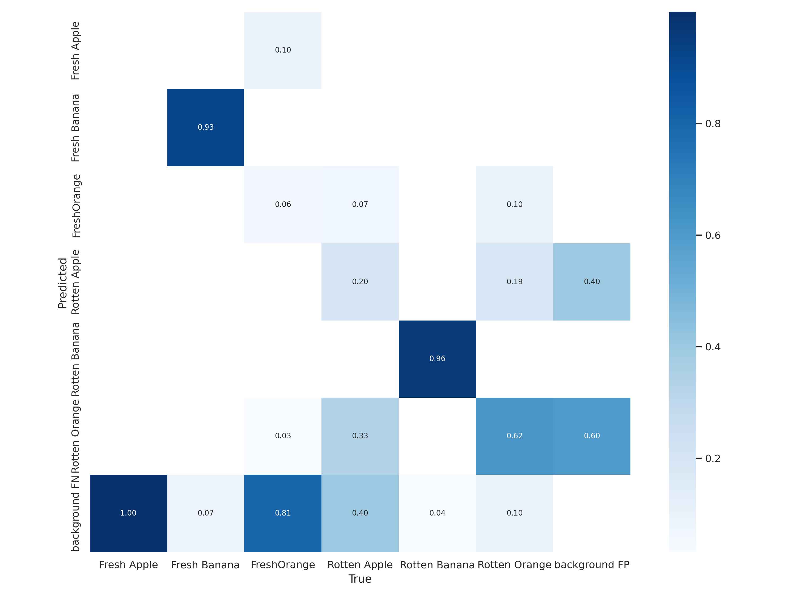
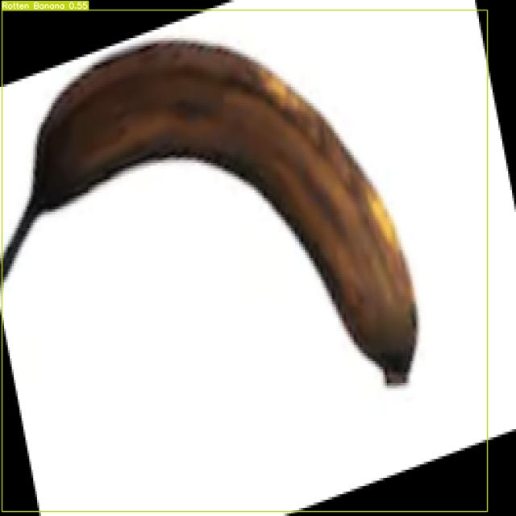

Object Detection Fruit Freshness Menggunakan YoloV7#
1.1 Menghubungkan Collab#
from google.colab import drive
drive.mount('/content/gdrive')
---------------------------------------------------------------------------
KeyboardInterrupt Traceback (most recent call last)
<ipython-input-1-4996ee3d8d09> in <cell line: 2>()
1 from google.colab import drive
----> 2 drive.mount('/content/gdrive')
/usr/local/lib/python3.10/dist-packages/google/colab/drive.py in mount(mountpoint, force_remount, timeout_ms, readonly)
101 def mount(mountpoint, force_remount=False, timeout_ms=120000, readonly=False):
102 """Mount your Google Drive at the specified mountpoint path."""
--> 103 return _mount(
104 mountpoint,
105 force_remount=force_remount,
/usr/local/lib/python3.10/dist-packages/google/colab/drive.py in _mount(mountpoint, force_remount, timeout_ms, ephemeral, readonly)
130 )
131 if ephemeral:
--> 132 _message.blocking_request(
133 'request_auth', request={'authType': 'dfs_ephemeral'}, timeout_sec=None
134 )
/usr/local/lib/python3.10/dist-packages/google/colab/_message.py in blocking_request(request_type, request, timeout_sec, parent)
174 request_type, request, parent=parent, expect_reply=True
175 )
--> 176 return read_reply_from_input(request_id, timeout_sec)
/usr/local/lib/python3.10/dist-packages/google/colab/_message.py in read_reply_from_input(message_id, timeout_sec)
94 reply = _read_next_input_message()
95 if reply == _NOT_READY or not isinstance(reply, dict):
---> 96 time.sleep(0.025)
97 continue
98 if (
KeyboardInterrupt:
1.2 Install Requirement YoloV7#
%cd /content/gdrive/MyDrive/DeepLearning/YoloV7
!git clone https://github.com/augmentedstartups/yolov7.git
%cd yolov7
!pip install -r requirements.txt
!pip install roboflow
/content/gdrive/MyDrive/DeepLearning/YoloV7
fatal: destination path 'yolov7' already exists and is not an empty directory.
/content/gdrive/MyDrive/DeepLearning/YoloV7/yolov7
Requirement already satisfied: matplotlib>=3.2.2 in /usr/local/lib/python3.10/dist-packages (from -r requirements.txt (line 4)) (3.7.1)
Requirement already satisfied: numpy>=1.18.5 in /usr/local/lib/python3.10/dist-packages (from -r requirements.txt (line 5)) (1.23.5)
Requirement already satisfied: opencv-python>=4.1.1 in /usr/local/lib/python3.10/dist-packages (from -r requirements.txt (line 6)) (4.8.0.76)
Requirement already satisfied: Pillow>=7.1.2 in /usr/local/lib/python3.10/dist-packages (from -r requirements.txt (line 7)) (9.4.0)
Requirement already satisfied: PyYAML>=5.3.1 in /usr/local/lib/python3.10/dist-packages (from -r requirements.txt (line 8)) (6.0.1)
Requirement already satisfied: requests>=2.23.0 in /usr/local/lib/python3.10/dist-packages (from -r requirements.txt (line 9)) (2.31.0)
Requirement already satisfied: scipy>=1.4.1 in /usr/local/lib/python3.10/dist-packages (from -r requirements.txt (line 10)) (1.11.3)
Requirement already satisfied: torch!=1.12.0,>=1.7.0 in /usr/local/lib/python3.10/dist-packages (from -r requirements.txt (line 11)) (2.0.1+cu118)
Requirement already satisfied: torchvision!=0.13.0,>=0.8.1 in /usr/local/lib/python3.10/dist-packages (from -r requirements.txt (line 12)) (0.15.2+cu118)
Requirement already satisfied: tqdm>=4.41.0 in /usr/local/lib/python3.10/dist-packages (from -r requirements.txt (line 13)) (4.66.1)
Requirement already satisfied: protobuf<4.21.3 in /usr/local/lib/python3.10/dist-packages (from -r requirements.txt (line 14)) (3.20.3)
Requirement already satisfied: tensorboard>=2.4.1 in /usr/local/lib/python3.10/dist-packages (from -r requirements.txt (line 17)) (2.13.0)
Requirement already satisfied: pandas>=1.1.4 in /usr/local/lib/python3.10/dist-packages (from -r requirements.txt (line 21)) (1.5.3)
Requirement already satisfied: seaborn>=0.11.0 in /usr/local/lib/python3.10/dist-packages (from -r requirements.txt (line 22)) (0.12.2)
Requirement already satisfied: ipython in /usr/local/lib/python3.10/dist-packages (from -r requirements.txt (line 34)) (7.34.0)
Requirement already satisfied: psutil in /usr/local/lib/python3.10/dist-packages (from -r requirements.txt (line 35)) (5.9.5)
Collecting thop (from -r requirements.txt (line 36))
Downloading thop-0.1.1.post2209072238-py3-none-any.whl (15 kB)
Requirement already satisfied: contourpy>=1.0.1 in /usr/local/lib/python3.10/dist-packages (from matplotlib>=3.2.2->-r requirements.txt (line 4)) (1.1.1)
Requirement already satisfied: cycler>=0.10 in /usr/local/lib/python3.10/dist-packages (from matplotlib>=3.2.2->-r requirements.txt (line 4)) (0.12.1)
Requirement already satisfied: fonttools>=4.22.0 in /usr/local/lib/python3.10/dist-packages (from matplotlib>=3.2.2->-r requirements.txt (line 4)) (4.43.1)
Requirement already satisfied: kiwisolver>=1.0.1 in /usr/local/lib/python3.10/dist-packages (from matplotlib>=3.2.2->-r requirements.txt (line 4)) (1.4.5)
Requirement already satisfied: packaging>=20.0 in /usr/local/lib/python3.10/dist-packages (from matplotlib>=3.2.2->-r requirements.txt (line 4)) (23.2)
Requirement already satisfied: pyparsing>=2.3.1 in /usr/local/lib/python3.10/dist-packages (from matplotlib>=3.2.2->-r requirements.txt (line 4)) (3.1.1)
Requirement already satisfied: python-dateutil>=2.7 in /usr/local/lib/python3.10/dist-packages (from matplotlib>=3.2.2->-r requirements.txt (line 4)) (2.8.2)
Requirement already satisfied: charset-normalizer<4,>=2 in /usr/local/lib/python3.10/dist-packages (from requests>=2.23.0->-r requirements.txt (line 9)) (3.3.0)
Requirement already satisfied: idna<4,>=2.5 in /usr/local/lib/python3.10/dist-packages (from requests>=2.23.0->-r requirements.txt (line 9)) (3.4)
Requirement already satisfied: urllib3<3,>=1.21.1 in /usr/local/lib/python3.10/dist-packages (from requests>=2.23.0->-r requirements.txt (line 9)) (2.0.6)
Requirement already satisfied: certifi>=2017.4.17 in /usr/local/lib/python3.10/dist-packages (from requests>=2.23.0->-r requirements.txt (line 9)) (2023.7.22)
Requirement already satisfied: filelock in /usr/local/lib/python3.10/dist-packages (from torch!=1.12.0,>=1.7.0->-r requirements.txt (line 11)) (3.12.4)
Requirement already satisfied: typing-extensions in /usr/local/lib/python3.10/dist-packages (from torch!=1.12.0,>=1.7.0->-r requirements.txt (line 11)) (4.5.0)
Requirement already satisfied: sympy in /usr/local/lib/python3.10/dist-packages (from torch!=1.12.0,>=1.7.0->-r requirements.txt (line 11)) (1.12)
Requirement already satisfied: networkx in /usr/local/lib/python3.10/dist-packages (from torch!=1.12.0,>=1.7.0->-r requirements.txt (line 11)) (3.1)
Requirement already satisfied: jinja2 in /usr/local/lib/python3.10/dist-packages (from torch!=1.12.0,>=1.7.0->-r requirements.txt (line 11)) (3.1.2)
Requirement already satisfied: triton==2.0.0 in /usr/local/lib/python3.10/dist-packages (from torch!=1.12.0,>=1.7.0->-r requirements.txt (line 11)) (2.0.0)
Requirement already satisfied: cmake in /usr/local/lib/python3.10/dist-packages (from triton==2.0.0->torch!=1.12.0,>=1.7.0->-r requirements.txt (line 11)) (3.27.6)
Requirement already satisfied: lit in /usr/local/lib/python3.10/dist-packages (from triton==2.0.0->torch!=1.12.0,>=1.7.0->-r requirements.txt (line 11)) (17.0.2)
Requirement already satisfied: absl-py>=0.4 in /usr/local/lib/python3.10/dist-packages (from tensorboard>=2.4.1->-r requirements.txt (line 17)) (1.4.0)
Requirement already satisfied: grpcio>=1.48.2 in /usr/local/lib/python3.10/dist-packages (from tensorboard>=2.4.1->-r requirements.txt (line 17)) (1.59.0)
Requirement already satisfied: google-auth<3,>=1.6.3 in /usr/local/lib/python3.10/dist-packages (from tensorboard>=2.4.1->-r requirements.txt (line 17)) (2.17.3)
Requirement already satisfied: google-auth-oauthlib<1.1,>=0.5 in /usr/local/lib/python3.10/dist-packages (from tensorboard>=2.4.1->-r requirements.txt (line 17)) (1.0.0)
Requirement already satisfied: markdown>=2.6.8 in /usr/local/lib/python3.10/dist-packages (from tensorboard>=2.4.1->-r requirements.txt (line 17)) (3.5)
Requirement already satisfied: setuptools>=41.0.0 in /usr/local/lib/python3.10/dist-packages (from tensorboard>=2.4.1->-r requirements.txt (line 17)) (67.7.2)
Requirement already satisfied: tensorboard-data-server<0.8.0,>=0.7.0 in /usr/local/lib/python3.10/dist-packages (from tensorboard>=2.4.1->-r requirements.txt (line 17)) (0.7.1)
Requirement already satisfied: werkzeug>=1.0.1 in /usr/local/lib/python3.10/dist-packages (from tensorboard>=2.4.1->-r requirements.txt (line 17)) (3.0.0)
Requirement already satisfied: wheel>=0.26 in /usr/local/lib/python3.10/dist-packages (from tensorboard>=2.4.1->-r requirements.txt (line 17)) (0.41.2)
Requirement already satisfied: pytz>=2020.1 in /usr/local/lib/python3.10/dist-packages (from pandas>=1.1.4->-r requirements.txt (line 21)) (2023.3.post1)
Collecting jedi>=0.16 (from ipython->-r requirements.txt (line 34))
Downloading jedi-0.19.1-py2.py3-none-any.whl (1.6 MB)
━━━━━━━━━━━━━━━━━━━━━━━━━━━━━━━━━━━━━━━━ 1.6/1.6 MB 24.5 MB/s eta 0:00:00
?25hRequirement already satisfied: decorator in /usr/local/lib/python3.10/dist-packages (from ipython->-r requirements.txt (line 34)) (4.4.2)
Requirement already satisfied: pickleshare in /usr/local/lib/python3.10/dist-packages (from ipython->-r requirements.txt (line 34)) (0.7.5)
Requirement already satisfied: traitlets>=4.2 in /usr/local/lib/python3.10/dist-packages (from ipython->-r requirements.txt (line 34)) (5.7.1)
Requirement already satisfied: prompt-toolkit!=3.0.0,!=3.0.1,<3.1.0,>=2.0.0 in /usr/local/lib/python3.10/dist-packages (from ipython->-r requirements.txt (line 34)) (3.0.39)
Requirement already satisfied: pygments in /usr/local/lib/python3.10/dist-packages (from ipython->-r requirements.txt (line 34)) (2.16.1)
Requirement already satisfied: backcall in /usr/local/lib/python3.10/dist-packages (from ipython->-r requirements.txt (line 34)) (0.2.0)
Requirement already satisfied: matplotlib-inline in /usr/local/lib/python3.10/dist-packages (from ipython->-r requirements.txt (line 34)) (0.1.6)
Requirement already satisfied: pexpect>4.3 in /usr/local/lib/python3.10/dist-packages (from ipython->-r requirements.txt (line 34)) (4.8.0)
Requirement already satisfied: cachetools<6.0,>=2.0.0 in /usr/local/lib/python3.10/dist-packages (from google-auth<3,>=1.6.3->tensorboard>=2.4.1->-r requirements.txt (line 17)) (5.3.1)
Requirement already satisfied: pyasn1-modules>=0.2.1 in /usr/local/lib/python3.10/dist-packages (from google-auth<3,>=1.6.3->tensorboard>=2.4.1->-r requirements.txt (line 17)) (0.3.0)
Requirement already satisfied: six>=1.9.0 in /usr/local/lib/python3.10/dist-packages (from google-auth<3,>=1.6.3->tensorboard>=2.4.1->-r requirements.txt (line 17)) (1.16.0)
Requirement already satisfied: rsa<5,>=3.1.4 in /usr/local/lib/python3.10/dist-packages (from google-auth<3,>=1.6.3->tensorboard>=2.4.1->-r requirements.txt (line 17)) (4.9)
Requirement already satisfied: requests-oauthlib>=0.7.0 in /usr/local/lib/python3.10/dist-packages (from google-auth-oauthlib<1.1,>=0.5->tensorboard>=2.4.1->-r requirements.txt (line 17)) (1.3.1)
Requirement already satisfied: parso<0.9.0,>=0.8.3 in /usr/local/lib/python3.10/dist-packages (from jedi>=0.16->ipython->-r requirements.txt (line 34)) (0.8.3)
Requirement already satisfied: ptyprocess>=0.5 in /usr/local/lib/python3.10/dist-packages (from pexpect>4.3->ipython->-r requirements.txt (line 34)) (0.7.0)
Requirement already satisfied: wcwidth in /usr/local/lib/python3.10/dist-packages (from prompt-toolkit!=3.0.0,!=3.0.1,<3.1.0,>=2.0.0->ipython->-r requirements.txt (line 34)) (0.2.8)
Requirement already satisfied: MarkupSafe>=2.1.1 in /usr/local/lib/python3.10/dist-packages (from werkzeug>=1.0.1->tensorboard>=2.4.1->-r requirements.txt (line 17)) (2.1.3)
Requirement already satisfied: mpmath>=0.19 in /usr/local/lib/python3.10/dist-packages (from sympy->torch!=1.12.0,>=1.7.0->-r requirements.txt (line 11)) (1.3.0)
Requirement already satisfied: pyasn1<0.6.0,>=0.4.6 in /usr/local/lib/python3.10/dist-packages (from pyasn1-modules>=0.2.1->google-auth<3,>=1.6.3->tensorboard>=2.4.1->-r requirements.txt (line 17)) (0.5.0)
Requirement already satisfied: oauthlib>=3.0.0 in /usr/local/lib/python3.10/dist-packages (from requests-oauthlib>=0.7.0->google-auth-oauthlib<1.1,>=0.5->tensorboard>=2.4.1->-r requirements.txt (line 17)) (3.2.2)
Installing collected packages: jedi, thop
Successfully installed jedi-0.19.1 thop-0.1.1.post2209072238
Collecting roboflow
Downloading roboflow-1.1.7-py3-none-any.whl (58 kB)
━━━━━━━━━━━━━━━━━━━━━━━━━━━━━━━━━━━━━━━━ 58.8/58.8 kB 1.9 MB/s eta 0:00:00
?25hCollecting certifi==2022.12.7 (from roboflow)
Downloading certifi-2022.12.7-py3-none-any.whl (155 kB)
━━━━━━━━━━━━━━━━━━━━━━━━━━━━━━━━━━━━━━━ 155.3/155.3 kB 9.6 MB/s eta 0:00:00
?25hCollecting chardet==4.0.0 (from roboflow)
Downloading chardet-4.0.0-py2.py3-none-any.whl (178 kB)
━━━━━━━━━━━━━━━━━━━━━━━━━━━━━━━━━━━━━━ 178.7/178.7 kB 25.5 MB/s eta 0:00:00
?25hCollecting cycler==0.10.0 (from roboflow)
Downloading cycler-0.10.0-py2.py3-none-any.whl (6.5 kB)
Collecting idna==2.10 (from roboflow)
Downloading idna-2.10-py2.py3-none-any.whl (58 kB)
━━━━━━━━━━━━━━━━━━━━━━━━━━━━━━━━━━━━━━━━ 58.8/58.8 kB 8.2 MB/s eta 0:00:00
?25hRequirement already satisfied: kiwisolver>=1.3.1 in /usr/local/lib/python3.10/dist-packages (from roboflow) (1.4.5)
Requirement already satisfied: matplotlib in /usr/local/lib/python3.10/dist-packages (from roboflow) (3.7.1)
Requirement already satisfied: numpy>=1.18.5 in /usr/local/lib/python3.10/dist-packages (from roboflow) (1.23.5)
Collecting opencv-python-headless==4.8.0.74 (from roboflow)
Downloading opencv_python_headless-4.8.0.74-cp37-abi3-manylinux_2_17_x86_64.manylinux2014_x86_64.whl (49.1 MB)
━━━━━━━━━━━━━━━━━━━━━━━━━━━━━━━━━━━━━━━━ 49.1/49.1 MB 12.2 MB/s eta 0:00:00
?25hRequirement already satisfied: Pillow>=7.1.2 in /usr/local/lib/python3.10/dist-packages (from roboflow) (9.4.0)
Collecting pyparsing==2.4.7 (from roboflow)
Downloading pyparsing-2.4.7-py2.py3-none-any.whl (67 kB)
━━━━━━━━━━━━━━━━━━━━━━━━━━━━━━━━━━━━━━━━ 67.8/67.8 kB 9.5 MB/s eta 0:00:00
?25hRequirement already satisfied: python-dateutil in /usr/local/lib/python3.10/dist-packages (from roboflow) (2.8.2)
Collecting python-dotenv (from roboflow)
Downloading python_dotenv-1.0.0-py3-none-any.whl (19 kB)
Requirement already satisfied: requests in /usr/local/lib/python3.10/dist-packages (from roboflow) (2.31.0)
Requirement already satisfied: six in /usr/local/lib/python3.10/dist-packages (from roboflow) (1.16.0)
Collecting supervision (from roboflow)
Downloading supervision-0.15.0-py3-none-any.whl (69 kB)
━━━━━━━━━━━━━━━━━━━━━━━━━━━━━━━━━━━━━━━━ 69.0/69.0 kB 10.0 MB/s eta 0:00:00
?25hRequirement already satisfied: urllib3>=1.26.6 in /usr/local/lib/python3.10/dist-packages (from roboflow) (2.0.6)
Requirement already satisfied: tqdm>=4.41.0 in /usr/local/lib/python3.10/dist-packages (from roboflow) (4.66.1)
Requirement already satisfied: PyYAML>=5.3.1 in /usr/local/lib/python3.10/dist-packages (from roboflow) (6.0.1)
Collecting requests-toolbelt (from roboflow)
Downloading requests_toolbelt-1.0.0-py2.py3-none-any.whl (54 kB)
━━━━━━━━━━━━━━━━━━━━━━━━━━━━━━━━━━━━━━━━ 54.5/54.5 kB 7.5 MB/s eta 0:00:00
?25hRequirement already satisfied: contourpy>=1.0.1 in /usr/local/lib/python3.10/dist-packages (from matplotlib->roboflow) (1.1.1)
Requirement already satisfied: fonttools>=4.22.0 in /usr/local/lib/python3.10/dist-packages (from matplotlib->roboflow) (4.43.1)
Requirement already satisfied: packaging>=20.0 in /usr/local/lib/python3.10/dist-packages (from matplotlib->roboflow) (23.2)
Requirement already satisfied: charset-normalizer<4,>=2 in /usr/local/lib/python3.10/dist-packages (from requests->roboflow) (3.3.0)
Requirement already satisfied: scipy<2.0.0,>=1.9.0 in /usr/local/lib/python3.10/dist-packages (from supervision->roboflow) (1.11.3)
Installing collected packages: python-dotenv, pyparsing, opencv-python-headless, idna, cycler, chardet, certifi, supervision, requests-toolbelt, roboflow
Attempting uninstall: pyparsing
Found existing installation: pyparsing 3.1.1
Uninstalling pyparsing-3.1.1:
Successfully uninstalled pyparsing-3.1.1
Attempting uninstall: opencv-python-headless
Found existing installation: opencv-python-headless 4.8.1.78
Uninstalling opencv-python-headless-4.8.1.78:
Successfully uninstalled opencv-python-headless-4.8.1.78
Attempting uninstall: idna
Found existing installation: idna 3.4
Uninstalling idna-3.4:
Successfully uninstalled idna-3.4
Attempting uninstall: cycler
Found existing installation: cycler 0.12.1
Uninstalling cycler-0.12.1:
Successfully uninstalled cycler-0.12.1
Attempting uninstall: chardet
Found existing installation: chardet 5.2.0
Uninstalling chardet-5.2.0:
Successfully uninstalled chardet-5.2.0
Attempting uninstall: certifi
Found existing installation: certifi 2023.7.22
Uninstalling certifi-2023.7.22:
Successfully uninstalled certifi-2023.7.22
Successfully installed certifi-2022.12.7 chardet-4.0.0 cycler-0.10.0 idna-2.10 opencv-python-headless-4.8.0.74 pyparsing-2.4.7 python-dotenv-1.0.0 requests-toolbelt-1.0.0 roboflow-1.1.7 supervision-0.15.0
1.3 Import Dataset#
%cd /content/gdrive/MyDrive/DeepLearning/YoloV7/yolov7
#### ROBOFLOW DATASET DOWNLOAD CODE #####
!pip install roboflow
from roboflow import Roboflow
rf = Roboflow(api_key="Eg2mh8jzWX7NSGZC4Z2i")
# project = rf.workspace("universitas-trunojoyo-madura-jm6fr").project("fruit-freshness-dzsvf")
# dataset = project.version(3).download("yolov7")
project = rf.workspace("universitas-trunojoyo-madura-jm6fr").project("fruit-freshness-dzsvf")
dataset = project.version(4).download("yolov7")
/content/gdrive/MyDrive/DeepLearning/YoloV7/yolov7
Requirement already satisfied: roboflow in /usr/local/lib/python3.10/dist-packages (1.1.7)
Requirement already satisfied: certifi==2022.12.7 in /usr/local/lib/python3.10/dist-packages (from roboflow) (2022.12.7)
Requirement already satisfied: chardet==4.0.0 in /usr/local/lib/python3.10/dist-packages (from roboflow) (4.0.0)
Requirement already satisfied: cycler==0.10.0 in /usr/local/lib/python3.10/dist-packages (from roboflow) (0.10.0)
Requirement already satisfied: idna==2.10 in /usr/local/lib/python3.10/dist-packages (from roboflow) (2.10)
Requirement already satisfied: kiwisolver>=1.3.1 in /usr/local/lib/python3.10/dist-packages (from roboflow) (1.4.5)
Requirement already satisfied: matplotlib in /usr/local/lib/python3.10/dist-packages (from roboflow) (3.7.1)
Requirement already satisfied: numpy>=1.18.5 in /usr/local/lib/python3.10/dist-packages (from roboflow) (1.23.5)
Requirement already satisfied: opencv-python-headless==4.8.0.74 in /usr/local/lib/python3.10/dist-packages (from roboflow) (4.8.0.74)
Requirement already satisfied: Pillow>=7.1.2 in /usr/local/lib/python3.10/dist-packages (from roboflow) (9.4.0)
Requirement already satisfied: pyparsing==2.4.7 in /usr/local/lib/python3.10/dist-packages (from roboflow) (2.4.7)
Requirement already satisfied: python-dateutil in /usr/local/lib/python3.10/dist-packages (from roboflow) (2.8.2)
Requirement already satisfied: python-dotenv in /usr/local/lib/python3.10/dist-packages (from roboflow) (1.0.0)
Requirement already satisfied: requests in /usr/local/lib/python3.10/dist-packages (from roboflow) (2.31.0)
Requirement already satisfied: six in /usr/local/lib/python3.10/dist-packages (from roboflow) (1.16.0)
Requirement already satisfied: supervision in /usr/local/lib/python3.10/dist-packages (from roboflow) (0.15.0)
Requirement already satisfied: urllib3>=1.26.6 in /usr/local/lib/python3.10/dist-packages (from roboflow) (2.0.6)
Requirement already satisfied: tqdm>=4.41.0 in /usr/local/lib/python3.10/dist-packages (from roboflow) (4.66.1)
Requirement already satisfied: PyYAML>=5.3.1 in /usr/local/lib/python3.10/dist-packages (from roboflow) (6.0.1)
Requirement already satisfied: requests-toolbelt in /usr/local/lib/python3.10/dist-packages (from roboflow) (1.0.0)
Requirement already satisfied: contourpy>=1.0.1 in /usr/local/lib/python3.10/dist-packages (from matplotlib->roboflow) (1.1.1)
Requirement already satisfied: fonttools>=4.22.0 in /usr/local/lib/python3.10/dist-packages (from matplotlib->roboflow) (4.43.1)
Requirement already satisfied: packaging>=20.0 in /usr/local/lib/python3.10/dist-packages (from matplotlib->roboflow) (23.2)
Requirement already satisfied: charset-normalizer<4,>=2 in /usr/local/lib/python3.10/dist-packages (from requests->roboflow) (3.3.0)
Requirement already satisfied: scipy<2.0.0,>=1.9.0 in /usr/local/lib/python3.10/dist-packages (from supervision->roboflow) (1.11.3)
loading Roboflow workspace...
loading Roboflow project...
Downloading Dataset Version Zip in Fruit-Freshness-4 to yolov7pytorch:: 100%|██████████| 38198/38198 [00:04<00:00, 8765.29it/s]
Extracting Dataset Version Zip to Fruit-Freshness-4 in yolov7pytorch:: 100%|██████████| 3004/3004 [00:17<00:00, 175.65it/s]
1.4 Download Weight YoloV7#
1.5 Training Model YoloV7#
!python train.py --workers 8 --device 0 --batch-size 8 --img 640 640 --cfg cfg/training/yolov7.yaml --epochs 50 --data Fruit-Freshness-4/data.yaml --weights 'yolov7.pt' --name yolov7-customFruit
2023-10-15 19:22:19.088920: I tensorflow/core/platform/cpu_feature_guard.cc:182] This TensorFlow binary is optimized to use available CPU instructions in performance-critical operations.
To enable the following instructions: AVX2 FMA, in other operations, rebuild TensorFlow with the appropriate compiler flags.
2023-10-15 19:22:20.025938: W tensorflow/compiler/tf2tensorrt/utils/py_utils.cc:38] TF-TRT Warning: Could not find TensorRT
YOLOR 🚀 v0.1-104-g941b94c torch 2.0.1+cu118 CUDA:0 (Tesla T4, 15101.8125MB)
Namespace(weights='yolov7.pt', cfg='cfg/training/yolov7.yaml', data='Fruit-Freshness-4/data.yaml', hyp='data/hyp.scratch.p5.yaml', epochs=50, batch_size=8, img_size=[640, 640], rect=False, resume=False, nosave=False, notest=False, noautoanchor=False, evolve=False, bucket='', cache_images=False, image_weights=False, device='0', multi_scale=False, single_cls=False, adam=False, sync_bn=False, local_rank=-1, workers=8, project='runs/train', entity=None, name='yolov7-customFruit', exist_ok=False, quad=False, linear_lr=False, label_smoothing=0.0, upload_dataset=False, bbox_interval=-1, save_period=-1, artifact_alias='latest', freeze=[0], world_size=1, global_rank=-1, save_dir='runs/train/yolov7-customFruit7', total_batch_size=8)
tensorboard: Start with 'tensorboard --logdir runs/train', view at http://localhost:6006/
hyperparameters: lr0=0.01, lrf=0.1, momentum=0.937, weight_decay=0.0005, warmup_epochs=3.0, warmup_momentum=0.8, warmup_bias_lr=0.1, box=0.05, cls=0.3, cls_pw=1.0, obj=0.7, obj_pw=1.0, iou_t=0.2, anchor_t=4.0, fl_gamma=0.0, hsv_h=0.015, hsv_s=0.7, hsv_v=0.4, degrees=0.0, translate=0.2, scale=0.9, shear=0.0, perspective=0.0, flipud=0.0, fliplr=0.5, mosaic=1.0, mixup=0.15, copy_paste=0.0, paste_in=0.15, loss_ota=1
wandb: Install Weights & Biases for YOLOR logging with 'pip install wandb' (recommended)
Overriding model.yaml nc=80 with nc=6
from n params module arguments
0 -1 1 928 models.common.Conv [3, 32, 3, 1]
1 -1 1 18560 models.common.Conv [32, 64, 3, 2]
2 -1 1 36992 models.common.Conv [64, 64, 3, 1]
3 -1 1 73984 models.common.Conv [64, 128, 3, 2]
4 -1 1 8320 models.common.Conv [128, 64, 1, 1]
5 -2 1 8320 models.common.Conv [128, 64, 1, 1]
6 -1 1 36992 models.common.Conv [64, 64, 3, 1]
7 -1 1 36992 models.common.Conv [64, 64, 3, 1]
8 -1 1 36992 models.common.Conv [64, 64, 3, 1]
9 -1 1 36992 models.common.Conv [64, 64, 3, 1]
10 [-1, -3, -5, -6] 1 0 models.common.Concat [1]
11 -1 1 66048 models.common.Conv [256, 256, 1, 1]
12 -1 1 0 models.common.MP []
13 -1 1 33024 models.common.Conv [256, 128, 1, 1]
14 -3 1 33024 models.common.Conv [256, 128, 1, 1]
15 -1 1 147712 models.common.Conv [128, 128, 3, 2]
16 [-1, -3] 1 0 models.common.Concat [1]
17 -1 1 33024 models.common.Conv [256, 128, 1, 1]
18 -2 1 33024 models.common.Conv [256, 128, 1, 1]
19 -1 1 147712 models.common.Conv [128, 128, 3, 1]
20 -1 1 147712 models.common.Conv [128, 128, 3, 1]
21 -1 1 147712 models.common.Conv [128, 128, 3, 1]
22 -1 1 147712 models.common.Conv [128, 128, 3, 1]
23 [-1, -3, -5, -6] 1 0 models.common.Concat [1]
24 -1 1 263168 models.common.Conv [512, 512, 1, 1]
25 -1 1 0 models.common.MP []
26 -1 1 131584 models.common.Conv [512, 256, 1, 1]
27 -3 1 131584 models.common.Conv [512, 256, 1, 1]
28 -1 1 590336 models.common.Conv [256, 256, 3, 2]
29 [-1, -3] 1 0 models.common.Concat [1]
30 -1 1 131584 models.common.Conv [512, 256, 1, 1]
31 -2 1 131584 models.common.Conv [512, 256, 1, 1]
32 -1 1 590336 models.common.Conv [256, 256, 3, 1]
33 -1 1 590336 models.common.Conv [256, 256, 3, 1]
34 -1 1 590336 models.common.Conv [256, 256, 3, 1]
35 -1 1 590336 models.common.Conv [256, 256, 3, 1]
36 [-1, -3, -5, -6] 1 0 models.common.Concat [1]
37 -1 1 1050624 models.common.Conv [1024, 1024, 1, 1]
38 -1 1 0 models.common.MP []
39 -1 1 525312 models.common.Conv [1024, 512, 1, 1]
40 -3 1 525312 models.common.Conv [1024, 512, 1, 1]
41 -1 1 2360320 models.common.Conv [512, 512, 3, 2]
42 [-1, -3] 1 0 models.common.Concat [1]
43 -1 1 262656 models.common.Conv [1024, 256, 1, 1]
44 -2 1 262656 models.common.Conv [1024, 256, 1, 1]
45 -1 1 590336 models.common.Conv [256, 256, 3, 1]
46 -1 1 590336 models.common.Conv [256, 256, 3, 1]
47 -1 1 590336 models.common.Conv [256, 256, 3, 1]
48 -1 1 590336 models.common.Conv [256, 256, 3, 1]
49 [-1, -3, -5, -6] 1 0 models.common.Concat [1]
50 -1 1 1050624 models.common.Conv [1024, 1024, 1, 1]
51 -1 1 7609344 models.common.SPPCSPC [1024, 512, 1]
52 -1 1 131584 models.common.Conv [512, 256, 1, 1]
53 -1 1 0 torch.nn.modules.upsampling.Upsample [None, 2, 'nearest']
54 37 1 262656 models.common.Conv [1024, 256, 1, 1]
55 [-1, -2] 1 0 models.common.Concat [1]
56 -1 1 131584 models.common.Conv [512, 256, 1, 1]
57 -2 1 131584 models.common.Conv [512, 256, 1, 1]
58 -1 1 295168 models.common.Conv [256, 128, 3, 1]
59 -1 1 147712 models.common.Conv [128, 128, 3, 1]
60 -1 1 147712 models.common.Conv [128, 128, 3, 1]
61 -1 1 147712 models.common.Conv [128, 128, 3, 1]
62[-1, -2, -3, -4, -5, -6] 1 0 models.common.Concat [1]
63 -1 1 262656 models.common.Conv [1024, 256, 1, 1]
64 -1 1 33024 models.common.Conv [256, 128, 1, 1]
65 -1 1 0 torch.nn.modules.upsampling.Upsample [None, 2, 'nearest']
66 24 1 65792 models.common.Conv [512, 128, 1, 1]
67 [-1, -2] 1 0 models.common.Concat [1]
68 -1 1 33024 models.common.Conv [256, 128, 1, 1]
69 -2 1 33024 models.common.Conv [256, 128, 1, 1]
70 -1 1 73856 models.common.Conv [128, 64, 3, 1]
71 -1 1 36992 models.common.Conv [64, 64, 3, 1]
72 -1 1 36992 models.common.Conv [64, 64, 3, 1]
73 -1 1 36992 models.common.Conv [64, 64, 3, 1]
74[-1, -2, -3, -4, -5, -6] 1 0 models.common.Concat [1]
75 -1 1 65792 models.common.Conv [512, 128, 1, 1]
76 -1 1 0 models.common.MP []
77 -1 1 16640 models.common.Conv [128, 128, 1, 1]
78 -3 1 16640 models.common.Conv [128, 128, 1, 1]
79 -1 1 147712 models.common.Conv [128, 128, 3, 2]
80 [-1, -3, 63] 1 0 models.common.Concat [1]
81 -1 1 131584 models.common.Conv [512, 256, 1, 1]
82 -2 1 131584 models.common.Conv [512, 256, 1, 1]
83 -1 1 295168 models.common.Conv [256, 128, 3, 1]
84 -1 1 147712 models.common.Conv [128, 128, 3, 1]
85 -1 1 147712 models.common.Conv [128, 128, 3, 1]
86 -1 1 147712 models.common.Conv [128, 128, 3, 1]
87[-1, -2, -3, -4, -5, -6] 1 0 models.common.Concat [1]
88 -1 1 262656 models.common.Conv [1024, 256, 1, 1]
89 -1 1 0 models.common.MP []
90 -1 1 66048 models.common.Conv [256, 256, 1, 1]
91 -3 1 66048 models.common.Conv [256, 256, 1, 1]
92 -1 1 590336 models.common.Conv [256, 256, 3, 2]
93 [-1, -3, 51] 1 0 models.common.Concat [1]
94 -1 1 525312 models.common.Conv [1024, 512, 1, 1]
95 -2 1 525312 models.common.Conv [1024, 512, 1, 1]
96 -1 1 1180160 models.common.Conv [512, 256, 3, 1]
97 -1 1 590336 models.common.Conv [256, 256, 3, 1]
98 -1 1 590336 models.common.Conv [256, 256, 3, 1]
99 -1 1 590336 models.common.Conv [256, 256, 3, 1]
100[-1, -2, -3, -4, -5, -6] 1 0 models.common.Concat [1]
101 -1 1 1049600 models.common.Conv [2048, 512, 1, 1]
102 75 1 328704 models.common.RepConv [128, 256, 3, 1]
103 88 1 1312768 models.common.RepConv [256, 512, 3, 1]
104 101 1 5246976 models.common.RepConv [512, 1024, 3, 1]
105 [102, 103, 104] 1 61126 models.yolo.IDetect [6, [[12, 16, 19, 36, 40, 28], [36, 75, 76, 55, 72, 146], [142, 110, 192, 243, 459, 401]], [256, 512, 1024]]
Model Summary: 415 layers, 37223526 parameters, 37223526 gradients
Transferred 552/566 items from yolov7.pt
Scaled weight_decay = 0.0005
Optimizer groups: 95 .bias, 95 conv.weight, 98 other
train: Scanning 'Fruit-Freshness-4/train/labels.cache' images and labels... 1307 found, 0 missing, 0 empty, 0 corrupted: 100% 1307/1307 [00:00<?, ?it/s]
val: Scanning 'Fruit-Freshness-4/valid/labels.cache' images and labels... 126 found, 0 missing, 0 empty, 0 corrupted: 100% 126/126 [00:00<?, ?it/s]
autoanchor: Analyzing anchors... anchors/target = 2.04, Best Possible Recall (BPR) = 1.0000
Image sizes 640 train, 640 test
Using 2 dataloader workers
Logging results to runs/train/yolov7-customFruit7
Starting training for 50 epochs...
Epoch gpu_mem box obj cls total labels img_size
0/49 1.12G 0.04931 0.4198 0.03382 0.5029 11 640: 100% 164/164 [04:22<00:00, 1.60s/it]
Class Images Labels P R mAP@.5 mAP@.5:.95: 0% 0/8 [00:00<?, ?it/s]/usr/local/lib/python3.10/dist-packages/torch/functional.py:504: UserWarning: torch.meshgrid: in an upcoming release, it will be required to pass the indexing argument. (Triggered internally at ../aten/src/ATen/native/TensorShape.cpp:3483.)
return _VF.meshgrid(tensors, **kwargs) # type: ignore[attr-defined]
Class Images Labels P R mAP@.5 mAP@.5:.95: 100% 8/8 [00:20<00:00, 2.59s/it]
all 126 142 0.0242 0.145 0.0141 0.00326
Epoch gpu_mem box obj cls total labels img_size
1/49 7.41G 0.04114 0.01093 0.03482 0.08689 11 640: 100% 164/164 [01:31<00:00, 1.79it/s]
Class Images Labels P R mAP@.5 mAP@.5:.95: 100% 8/8 [00:03<00:00, 2.33it/s]
all 126 142 0.157 0.686 0.21 0.138
Epoch gpu_mem box obj cls total labels img_size
2/49 9.03G 0.029 0.00885 0.0305 0.06835 10 640: 100% 164/164 [01:27<00:00, 1.88it/s]
Class Images Labels P R mAP@.5 mAP@.5:.95: 100% 8/8 [00:02<00:00, 3.09it/s]
all 126 142 0.165 0.886 0.238 0.179
Epoch gpu_mem box obj cls total labels img_size
3/49 9.03G 0.02815 0.007836 0.02657 0.06256 10 640: 100% 164/164 [01:29<00:00, 1.84it/s]
Class Images Labels P R mAP@.5 mAP@.5:.95: 100% 8/8 [00:02<00:00, 3.13it/s]
all 126 142 0.152 0.941 0.208 0.137
Epoch gpu_mem box obj cls total labels img_size
4/49 9.03G 0.02672 0.007667 0.02392 0.05831 9 640: 100% 164/164 [01:26<00:00, 1.89it/s]
Class Images Labels P R mAP@.5 mAP@.5:.95: 100% 8/8 [00:02<00:00, 3.02it/s]
all 126 142 0.18 0.791 0.205 0.142
Epoch gpu_mem box obj cls total labels img_size
5/49 9.03G 0.02495 0.008122 0.02309 0.05616 8 640: 100% 164/164 [01:26<00:00, 1.90it/s]
Class Images Labels P R mAP@.5 mAP@.5:.95: 100% 8/8 [00:03<00:00, 2.09it/s]
all 126 142 0.181 0.691 0.285 0.184
Epoch gpu_mem box obj cls total labels img_size
6/49 9.03G 0.02491 0.008838 0.02281 0.05656 6 640: 100% 164/164 [01:28<00:00, 1.85it/s]
Class Images Labels P R mAP@.5 mAP@.5:.95: 100% 8/8 [00:02<00:00, 3.18it/s]
all 126 142 0.174 0.697 0.233 0.163
Epoch gpu_mem box obj cls total labels img_size
7/49 9.03G 0.02112 0.00869 0.02108 0.05089 10 640: 100% 164/164 [01:28<00:00, 1.86it/s]
Class Images Labels P R mAP@.5 mAP@.5:.95: 100% 8/8 [00:02<00:00, 3.28it/s]
all 126 142 0.263 0.592 0.352 0.235
Epoch gpu_mem box obj cls total labels img_size
8/49 9.03G 0.01939 0.009018 0.0197 0.0481 15 640: 100% 164/164 [01:28<00:00, 1.85it/s]
Class Images Labels P R mAP@.5 mAP@.5:.95: 100% 8/8 [00:02<00:00, 3.41it/s]
all 126 142 0.222 0.797 0.331 0.232
Epoch gpu_mem box obj cls total labels img_size
9/49 9.03G 0.01964 0.009298 0.01917 0.04811 8 640: 100% 164/164 [01:27<00:00, 1.87it/s]
Class Images Labels P R mAP@.5 mAP@.5:.95: 100% 8/8 [00:02<00:00, 3.27it/s]
all 126 142 0.256 0.813 0.392 0.264
Epoch gpu_mem box obj cls total labels img_size
10/49 9.03G 0.01785 0.008934 0.01801 0.04479 11 640: 100% 164/164 [01:28<00:00, 1.86it/s]
Class Images Labels P R mAP@.5 mAP@.5:.95: 100% 8/8 [00:02<00:00, 3.24it/s]
all 126 142 0.261 0.792 0.35 0.222
Epoch gpu_mem box obj cls total labels img_size
11/49 9.03G 0.01883 0.008773 0.01808 0.04568 10 640: 100% 164/164 [01:27<00:00, 1.87it/s]
Class Images Labels P R mAP@.5 mAP@.5:.95: 100% 8/8 [00:02<00:00, 3.20it/s]
all 126 142 0.292 0.825 0.411 0.283
Epoch gpu_mem box obj cls total labels img_size
12/49 9.03G 0.01856 0.008862 0.01745 0.04488 9 640: 100% 164/164 [01:29<00:00, 1.84it/s]
Class Images Labels P R mAP@.5 mAP@.5:.95: 100% 8/8 [00:03<00:00, 2.52it/s]
all 126 142 0.331 0.79 0.469 0.309
Epoch gpu_mem box obj cls total labels img_size
13/49 9.03G 0.01762 0.008828 0.01664 0.04309 10 640: 100% 164/164 [01:28<00:00, 1.84it/s]
Class Images Labels P R mAP@.5 mAP@.5:.95: 100% 8/8 [00:02<00:00, 3.14it/s]
all 126 142 0.411 0.867 0.555 0.385
Epoch gpu_mem box obj cls total labels img_size
14/49 9.03G 0.01714 0.008653 0.01619 0.04198 14 640: 100% 164/164 [01:27<00:00, 1.87it/s]
Class Images Labels P R mAP@.5 mAP@.5:.95: 100% 8/8 [00:03<00:00, 2.35it/s]
all 126 142 0.406 0.853 0.53 0.336
Epoch gpu_mem box obj cls total labels img_size
15/49 9.03G 0.01847 0.008714 0.0163 0.04349 11 640: 100% 164/164 [01:27<00:00, 1.88it/s]
Class Images Labels P R mAP@.5 mAP@.5:.95: 100% 8/8 [00:02<00:00, 3.11it/s]
all 126 142 0.424 0.802 0.561 0.388
Epoch gpu_mem box obj cls total labels img_size
16/49 9.03G 0.01788 0.008565 0.01664 0.04308 8 640: 100% 164/164 [01:27<00:00, 1.87it/s]
Class Images Labels P R mAP@.5 mAP@.5:.95: 100% 8/8 [00:03<00:00, 2.38it/s]
all 126 142 0.417 0.829 0.586 0.433
Epoch gpu_mem box obj cls total labels img_size
17/49 9.03G 0.0175 0.008305 0.01573 0.04154 8 640: 100% 164/164 [01:27<00:00, 1.87it/s]
Class Images Labels P R mAP@.5 mAP@.5:.95: 100% 8/8 [00:02<00:00, 2.96it/s]
all 126 142 0.416 0.658 0.547 0.387
Epoch gpu_mem box obj cls total labels img_size
18/49 9.03G 0.01616 0.008438 0.01535 0.03995 14 640: 100% 164/164 [01:26<00:00, 1.90it/s]
Class Images Labels P R mAP@.5 mAP@.5:.95: 100% 8/8 [00:02<00:00, 3.07it/s]
all 126 142 0.506 0.855 0.655 0.457
Epoch gpu_mem box obj cls total labels img_size
19/49 9.03G 0.01544 0.008184 0.01473 0.03835 8 640: 100% 164/164 [01:28<00:00, 1.86it/s]
Class Images Labels P R mAP@.5 mAP@.5:.95: 100% 8/8 [00:03<00:00, 2.10it/s]
all 126 142 0.551 0.868 0.656 0.454
Epoch gpu_mem box obj cls total labels img_size
20/49 9.03G 0.01628 0.00824 0.01473 0.03924 10 640: 100% 164/164 [01:27<00:00, 1.88it/s]
Class Images Labels P R mAP@.5 mAP@.5:.95: 100% 8/8 [00:02<00:00, 3.02it/s]
all 126 142 0.635 0.696 0.686 0.533
Epoch gpu_mem box obj cls total labels img_size
21/49 9.03G 0.0158 0.008324 0.01461 0.03873 19 640: 100% 164/164 [01:29<00:00, 1.84it/s]
Class Images Labels P R mAP@.5 mAP@.5:.95: 100% 8/8 [00:02<00:00, 3.19it/s]
all 126 142 0.681 0.755 0.728 0.537
Epoch gpu_mem box obj cls total labels img_size
22/49 9.03G 0.01454 0.007902 0.01399 0.03643 7 640: 100% 164/164 [01:26<00:00, 1.90it/s]
Class Images Labels P R mAP@.5 mAP@.5:.95: 100% 8/8 [00:02<00:00, 3.06it/s]
all 126 142 0.612 0.781 0.655 0.468
Epoch gpu_mem box obj cls total labels img_size
23/49 9.03G 0.01402 0.00793 0.01367 0.03563 12 640: 100% 164/164 [01:28<00:00, 1.86it/s]
Class Images Labels P R mAP@.5 mAP@.5:.95: 100% 8/8 [00:02<00:00, 3.32it/s]
all 126 142 0.71 0.645 0.727 0.571
Epoch gpu_mem box obj cls total labels img_size
24/49 9.03G 0.01516 0.007531 0.01352 0.0362 10 640: 100% 164/164 [01:26<00:00, 1.90it/s]
Class Images Labels P R mAP@.5 mAP@.5:.95: 100% 8/8 [00:02<00:00, 2.85it/s]
all 126 142 0.716 0.729 0.776 0.624
Epoch gpu_mem box obj cls total labels img_size
25/49 9.03G 0.01515 0.00765 0.01337 0.03617 6 640: 100% 164/164 [01:30<00:00, 1.80it/s]
Class Images Labels P R mAP@.5 mAP@.5:.95: 100% 8/8 [00:03<00:00, 2.16it/s]
all 126 142 0.591 0.804 0.673 0.506
Epoch gpu_mem box obj cls total labels img_size
26/49 9.03G 0.01446 0.007742 0.01339 0.0356 12 640: 100% 164/164 [01:29<00:00, 1.84it/s]
Class Images Labels P R mAP@.5 mAP@.5:.95: 100% 8/8 [00:02<00:00, 2.89it/s]
all 126 142 0.818 0.756 0.836 0.647
Epoch gpu_mem box obj cls total labels img_size
27/49 9.03G 0.01441 0.007454 0.01291 0.03477 8 640: 100% 164/164 [01:28<00:00, 1.85it/s]
Class Images Labels P R mAP@.5 mAP@.5:.95: 100% 8/8 [00:02<00:00, 3.04it/s]
all 126 142 0.749 0.792 0.842 0.657
Epoch gpu_mem box obj cls total labels img_size
28/49 9.03G 0.01575 0.007704 0.01292 0.03638 6 640: 100% 164/164 [01:29<00:00, 1.82it/s]
Class Images Labels P R mAP@.5 mAP@.5:.95: 100% 8/8 [00:03<00:00, 2.50it/s]
all 126 142 0.791 0.801 0.838 0.651
Epoch gpu_mem box obj cls total labels img_size
29/49 9.03G 0.01502 0.007564 0.01244 0.03503 12 640: 100% 164/164 [01:28<00:00, 1.86it/s]
Class Images Labels P R mAP@.5 mAP@.5:.95: 100% 8/8 [00:02<00:00, 3.20it/s]
all 126 142 0.676 0.86 0.815 0.622
Epoch gpu_mem box obj cls total labels img_size
30/49 9.03G 0.01355 0.007465 0.01163 0.03264 13 640: 100% 164/164 [01:28<00:00, 1.85it/s]
Class Images Labels P R mAP@.5 mAP@.5:.95: 100% 8/8 [00:02<00:00, 3.01it/s]
all 126 142 0.789 0.844 0.878 0.694
Epoch gpu_mem box obj cls total labels img_size
31/49 9.03G 0.01273 0.007287 0.01137 0.03138 9 640: 100% 164/164 [01:27<00:00, 1.88it/s]
Class Images Labels P R mAP@.5 mAP@.5:.95: 100% 8/8 [00:02<00:00, 3.29it/s]
all 126 142 0.772 0.844 0.86 0.673
Epoch gpu_mem box obj cls total labels img_size
32/49 9.03G 0.01358 0.007054 0.01125 0.03188 6 640: 100% 164/164 [01:26<00:00, 1.89it/s]
Class Images Labels P R mAP@.5 mAP@.5:.95: 100% 8/8 [00:02<00:00, 3.09it/s]
all 126 142 0.847 0.811 0.891 0.708
Epoch gpu_mem box obj cls total labels img_size
33/49 9.03G 0.01248 0.007203 0.01101 0.03069 8 640: 100% 164/164 [01:28<00:00, 1.86it/s]
Class Images Labels P R mAP@.5 mAP@.5:.95: 100% 8/8 [00:02<00:00, 2.77it/s]
all 126 142 0.871 0.732 0.869 0.678
Epoch gpu_mem box obj cls total labels img_size
34/49 9.03G 0.01304 0.006839 0.01075 0.03062 14 640: 100% 164/164 [01:26<00:00, 1.89it/s]
Class Images Labels P R mAP@.5 mAP@.5:.95: 100% 8/8 [00:02<00:00, 3.24it/s]
all 126 142 0.823 0.906 0.898 0.699
Epoch gpu_mem box obj cls total labels img_size
35/49 9.03G 0.01401 0.006879 0.01088 0.03177 10 640: 100% 164/164 [01:28<00:00, 1.86it/s]
Class Images Labels P R mAP@.5 mAP@.5:.95: 100% 8/8 [00:02<00:00, 2.73it/s]
all 126 142 0.85 0.838 0.902 0.7
Epoch gpu_mem box obj cls total labels img_size
36/49 9.03G 0.01401 0.006922 0.01088 0.03181 6 640: 100% 164/164 [01:27<00:00, 1.88it/s]
Class Images Labels P R mAP@.5 mAP@.5:.95: 100% 8/8 [00:03<00:00, 2.63it/s]
all 126 142 0.815 0.773 0.875 0.674
Epoch gpu_mem box obj cls total labels img_size
37/49 9.03G 0.01263 0.007099 0.01047 0.03019 7 640: 100% 164/164 [01:27<00:00, 1.87it/s]
Class Images Labels P R mAP@.5 mAP@.5:.95: 100% 8/8 [00:02<00:00, 3.13it/s]
all 126 142 0.876 0.865 0.924 0.734
Epoch gpu_mem box obj cls total labels img_size
38/49 9.03G 0.01101 0.006667 0.009839 0.02752 10 640: 100% 164/164 [01:26<00:00, 1.90it/s]
Class Images Labels P R mAP@.5 mAP@.5:.95: 100% 8/8 [00:02<00:00, 3.26it/s]
all 126 142 0.829 0.86 0.91 0.73
Epoch gpu_mem box obj cls total labels img_size
39/49 9.03G 0.0108 0.006677 0.009486 0.02696 16 640: 100% 164/164 [01:25<00:00, 1.92it/s]
Class Images Labels P R mAP@.5 mAP@.5:.95: 100% 8/8 [00:03<00:00, 2.12it/s]
all 126 142 0.854 0.832 0.894 0.702
Epoch gpu_mem box obj cls total labels img_size
40/49 9.03G 0.01271 0.006855 0.01017 0.02973 7 640: 100% 164/164 [01:26<00:00, 1.89it/s]
Class Images Labels P R mAP@.5 mAP@.5:.95: 100% 8/8 [00:02<00:00, 3.12it/s]
all 126 142 0.914 0.856 0.926 0.736
Epoch gpu_mem box obj cls total labels img_size
41/49 9.03G 0.01029 0.006446 0.009182 0.02592 8 640: 100% 164/164 [01:27<00:00, 1.87it/s]
Class Images Labels P R mAP@.5 mAP@.5:.95: 100% 8/8 [00:02<00:00, 3.08it/s]
all 126 142 0.859 0.861 0.93 0.75
Epoch gpu_mem box obj cls total labels img_size
42/49 9.03G 0.01263 0.006493 0.009897 0.02902 5 640: 100% 164/164 [01:25<00:00, 1.91it/s]
Class Images Labels P R mAP@.5 mAP@.5:.95: 100% 8/8 [00:03<00:00, 2.16it/s]
all 126 142 0.898 0.875 0.936 0.742
Epoch gpu_mem box obj cls total labels img_size
43/49 9.03G 0.01218 0.006371 0.009487 0.02803 7 640: 100% 164/164 [01:27<00:00, 1.88it/s]
Class Images Labels P R mAP@.5 mAP@.5:.95: 100% 8/8 [00:02<00:00, 2.77it/s]
all 126 142 0.851 0.876 0.934 0.744
Epoch gpu_mem box obj cls total labels img_size
44/49 9.03G 0.01063 0.006281 0.008945 0.02586 11 640: 100% 164/164 [01:26<00:00, 1.89it/s]
Class Images Labels P R mAP@.5 mAP@.5:.95: 100% 8/8 [00:02<00:00, 3.22it/s]
all 126 142 0.849 0.894 0.932 0.747
Epoch gpu_mem box obj cls total labels img_size
45/49 9.03G 0.01068 0.006412 0.008523 0.02562 5 640: 100% 164/164 [01:27<00:00, 1.88it/s]
Class Images Labels P R mAP@.5 mAP@.5:.95: 100% 8/8 [00:02<00:00, 3.08it/s]
all 126 142 0.906 0.833 0.926 0.746
Epoch gpu_mem box obj cls total labels img_size
46/49 9.03G 0.0103 0.006481 0.008651 0.02543 10 640: 100% 164/164 [01:29<00:00, 1.83it/s]
Class Images Labels P R mAP@.5 mAP@.5:.95: 100% 8/8 [00:02<00:00, 3.15it/s]
all 126 142 0.849 0.878 0.925 0.744
Epoch gpu_mem box obj cls total labels img_size
47/49 9.03G 0.01238 0.006284 0.008799 0.02747 4 640: 100% 164/164 [01:28<00:00, 1.86it/s]
Class Images Labels P R mAP@.5 mAP@.5:.95: 100% 8/8 [00:03<00:00, 2.06it/s]
all 126 142 0.883 0.876 0.943 0.756
Epoch gpu_mem box obj cls total labels img_size
48/49 9.03G 0.01148 0.006134 0.008581 0.0262 10 640: 100% 164/164 [01:28<00:00, 1.85it/s]
Class Images Labels P R mAP@.5 mAP@.5:.95: 100% 8/8 [00:02<00:00, 3.22it/s]
all 126 142 0.898 0.921 0.953 0.78
Epoch gpu_mem box obj cls total labels img_size
49/49 9.03G 0.01129 0.006282 0.008306 0.02587 9 640: 100% 164/164 [01:30<00:00, 1.82it/s]
Class Images Labels P R mAP@.5 mAP@.5:.95: 100% 8/8 [00:03<00:00, 2.19it/s]
all 126 142 0.921 0.841 0.946 0.772
Fresh Apple 126 23 0.806 1 0.947 0.798
Fresh Banana 126 27 1 0.7 0.971 0.673
FreshOrange 126 30 0.751 0.867 0.857 0.711
Rotten Apple 126 13 1 0.846 0.954 0.842
Rotten Banana 126 28 1 0.968 0.996 0.792
Rotten Orange 126 21 0.969 0.667 0.949 0.815
50 epochs completed in 1.363 hours.
Optimizer stripped from runs/train/yolov7-customFruit7/weights/last.pt, 74.9MB
Optimizer stripped from runs/train/yolov7-customFruit7/weights/best.pt, 74.9MB
1.6 Evaluasi Model#
%cd /content/gdrive/MyDrive/DeepLearning/YoloV7/yolov7
/content/gdrive/MyDrive/DeepLearning/YoloV7/yolov7
from IPython.display import Image
# display(Image("/content/gdrive/MyDrive/DeepLearning/YoloV7/yolov7/runs/train/yolov7-customFruit6/train_batch9.jpg", width=400, height=400))
# display(Image("/content/gdrive/MyDrive/DeepLearning/YoloV7/yolov7/runs/train/yolov7-customFruit2/F1_curve.png", width=400, height=400))
# display(Image("/content/gdrive/MyDrive/DeepLearning/YoloV7/yolov7/runs/train/yolov7-customFruit2/PR_curve.png", width=400, height=400))
# display(Image("/content/gdrive/MyDrive/DeepLearning/YoloV7/yolov7/runs/train/yolov7-customFruit2/confusion_matrix.png", width=500, height=500))
display(Image("/content/gdrive/MyDrive/DeepLearning/YoloV7/yolov7/runs/train/yolov7-customFruit6/confusion_matrix.png", width=500, height=500))

1.7 Prediksi Data#
1.7.1 Import Training Model#
!python detect.py --weights runs/train/yolov7-customFruit2/weights/best.pt --conf 0.1 --source Fruit-Freshness-7/test/images
# !python detect.py --weights runs/train/yolov7-customVehicle/weights/best.pt --conf 0.1 --source Vehicles-OpenImages-1/test/images
Namespace(weights=['runs/train/yolov7-customFruit2/weights/best.pt'], source='Fruit-Freshness-7/test/images', img_size=640, conf_thres=0.1, iou_thres=0.45, device='', view_img=False, save_txt=False, save_conf=False, nosave=False, classes=None, agnostic_nms=False, augment=False, update=False, project='runs/detect', name='exp', exist_ok=False, no_trace=False)
YOLOR 🚀 v0.1-104-g941b94c torch 2.0.1+cu118 CPU
Fusing layers...
RepConv.fuse_repvgg_block
RepConv.fuse_repvgg_block
RepConv.fuse_repvgg_block
IDetect.fuse
Model Summary: 314 layers, 36508742 parameters, 6194944 gradients
Convert model to Traced-model...
traced_script_module saved!
model is traced!
Traceback (most recent call last):
File "/content/gdrive/MyDrive/DeepLearning/YoloV7/yolov7/detect.py", line 195, in <module>
detect()
File "/content/gdrive/MyDrive/DeepLearning/YoloV7/yolov7/detect.py", line 57, in detect
dataset = LoadImages(source, img_size=imgsz, stride=stride)
File "/content/gdrive/MyDrive/DeepLearning/YoloV7/yolov7/utils/datasets.py", line 138, in __init__
raise Exception(f'ERROR: {p} does not exist')
Exception: ERROR: /content/gdrive/MyDrive/DeepLearning/YoloV7/yolov7/Fruit-Freshness-7/test/images does not exist
1.7.2 Prediksi Image#
Test Dengan Dataset Test#
#display inference on ALL test images
import glob
from IPython.display import Image, display
i = 0
limit = 10000 # max images to print
for imageName in glob.glob('/content/gdrive/MyDrive/DeepLearning/YoloV7/yolov7/runs/detect/exp*.jpg'):
#Assuming JPG
if i < limit:
display(Image(filename=imageName))
print("\n")
i = i + 1
display(Image("/content/gdrive/MyDrive/DeepLearning/YoloV7/yolov7/runs/detect/exp/rotated_by_15_Screen-Shot-2018-06-12-at-8-49-04-PM_png.rf.b817ba7234022e8610d1441396e21a35.jpg", width=400, height=400))

Membuat Bounding Box#
import os
import sys
sys.path.append('/content/gdrive/MyDrive/YoloV7/yolov7')
import argparse
import time
from pathlib import Path
import cv2
import torch
import numpy as np
import torch.backends.cudnn as cudnn
from numpy import random
from models.experimental import attempt_load
from utils.datasets import LoadStreams, LoadImages
from utils.general import check_img_size, check_requirements, check_imshow, non_max_suppression, apply_classifier, \
scale_coords, xyxy2xywh, strip_optimizer, set_logging, increment_path
from utils.plots import plot_one_box
from utils.torch_utils import select_device, load_classifier, time_synchronized, TracedModel
def letterbox(img, new_shape=(640, 640), color=(114, 114, 114), auto=True, scaleFill=False, scaleup=True, stride=32):
shape = img.shape[:2]
if isinstance(new_shape, int):
new_shape = (new_shape, new_shape)
r = min(new_shape[0] / shape[0], new_shape[1] / shape[1])
if not scaleup:
r = min(r, 1.0)
ratio = r, r
new_unpad = int(round(shape[1] * r)), int(round(shape[0] * r))
dw, dh = new_shape[1] - new_unpad[0], new_shape[0] - new_unpad[1]
if auto:
dw, dh = np.mod(dw, stride), np.mod(dh, stride)
elif scaleFill:
dw, dh = 0.0, 0.0
new_unpad = (new_shape[1], new_shape[0])
ratio = new_shape[1] / shape[1], new_shape[0] / shape[0]
dw /= 2
dh /= 2
if shape[::-1] != new_unpad:
img = cv2.resize(img, new_unpad, interpolation=cv2.INTER_LINEAR)
top, bottom = int(round(dh - 0.1)), int(round(dh + 0.1))
left, right = int(round(dw - 0.1)), int(round(dw + 0.1))
img = cv2.copyMakeBorder(img, top, bottom, left, right, cv2.BORDER_CONSTANT, value=color) # add border
return img, ratio, (dw, dh)
classes_to_filter = None
opt = {
"weights": "/content/gdrive/MyDrive/DeepLearning/YoloV7/yolov7/runs/train/yolov7-customFruit7/weights/last.pt",
"yaml" : "/content/gdrive/MyDrive/DeepLearning/YoloV7/yolov7/Fruit-Freshness-3/data.yaml",
"img-size": 640,
"conf-thres": 0.25,
"iou-thres" : 0.45,
"device" : '0',
"classes" : classes_to_filter
}
source_image_path = '/content/gdrive/MyDrive/DeepLearning/YoloV7/yolov7/test8.png'
with torch.no_grad():
weights, imgsz = opt['weights'], opt['img-size']
set_logging()
# device = select_device(opt['device'])
device = torch.device("cpu")
half = device.type != 'cpu'
model = attempt_load(weights, map_location=device)
stride = int(model.stride.max())
imgsz = check_img_size(imgsz, s=stride)
if half:
model.half()
names = model.module.names if hasattr(model, 'module') else model.names
colors = [[random.randint(0, 255) for _ in range(3)] for _ in names]
if device.type != 'cpu':
model(torch.zeros(1, 3, imgsz, imgsz).to(device).type_as(next(model.parameters())))
img0 = cv2.imread(source_image_path)
img = letterbox(img0, imgsz, stride=stride)[0]
img = img[:, :, ::-1].transpose(2, 0, 1)
img = np.ascontiguousarray(img)
img = torch.from_numpy(img).to(device)
img = img.half() if half else img.float()
img /= 255.0
if img.ndimension() == 3:
img = img.unsqueeze(0)
t1 = time_synchronized()
pred = model(img, augment= False)[0]
classes = None
if opt['classes']:
classes = []
for class_name in opt['classes']:
classes.append(opt['classes'].index(class_name))
pred = non_max_suppression(pred, opt['conf-thres'], opt['iou-thres'], classes= classes, agnostic= False)
t2 = time_synchronized()
pred_label = []
for i, det in enumerate(pred):
s = ''
s += '%gx%g ' % img.shape[2:]
gn = torch.tensor(img0.shape)[[1, 0, 1, 0]]
if len(det):
det[:, :4] = scale_coords(img.shape[2:], det[:, :4], img0.shape).round()
for c in det[:, -1].unique():
n = (det[:, -1] == c).sum()
s += f"{n} {names[int(c)]}{'s' * (n > 1)}, "
for *xyxy, conf, cls in reversed(det):
label = f'{names[int(cls)]} {conf:.2f}'
pred_label.append(label)
plot_one_box(xyxy, img0, label=label, color=colors[int(cls)], line_thickness=3)
Fusing layers...
RepConv.fuse_repvgg_block
RepConv.fuse_repvgg_block
RepConv.fuse_repvgg_block
IDetect.fuse
/usr/local/lib/python3.10/dist-packages/torch/functional.py:504: UserWarning: torch.meshgrid: in an upcoming release, it will be required to pass the indexing argument. (Triggered internally at ../aten/src/ATen/native/TensorShape.cpp:3483.)
return _VF.meshgrid(tensors, **kwargs) # type: ignore[attr-defined]
from google.colab.patches import cv2_imshow
cv2_imshow(img0)
print(pred_label)
Output hidden; open in https://colab.research.google.com to view.
1.7.3 Prediksi Video#
video_path = '/content/gdrive/MyDrive/DeepLearning/YoloV7/yolov7/TestVideo3.mp4'
# Initializing video object
video = cv2.VideoCapture(video_path)
#Video information
fps = video.get(cv2.CAP_PROP_FPS)
w = int(video.get(cv2.CAP_PROP_FRAME_WIDTH))
h = int(video.get(cv2.CAP_PROP_FRAME_HEIGHT))
nframes = int(video.get(cv2.CAP_PROP_FRAME_COUNT))
# Initialzing object for writing video output
output = cv2.VideoWriter('output2.mp4', cv2.VideoWriter_fourcc(*'DIVX'),fps , (w,h))
torch.cuda.empty_cache()
# Initializing model and setting it for inference
with torch.no_grad():
weights, imgsz = opt['weights'], opt['img-size']
set_logging()
device = torch.device("cpu")
# device = select_device(opt['device'])
half = device.type != 'cpu'
model = attempt_load(weights, map_location=device) # load FP32 model
stride = int(model.stride.max()) # model stride
imgsz = check_img_size(imgsz, s=stride) # check img_size
if half:
model.half()
names = model.module.names if hasattr(model, 'module') else model.names
colors = [[random.randint(0, 255) for _ in range(3)] for _ in names]
if device.type != 'cpu':
model(torch.zeros(1, 3, imgsz, imgsz).to(device).type_as(next(model.parameters())))
classes = None
if opt['classes']:
classes = []
for class_name in opt['classes']:
classes.append(opt['classes'].index(class_name))
for j in range(nframes):
ret, img0 = video.read()
if ret:
img = letterbox(img0, imgsz, stride=stride)[0]
img = img[:, :, ::-1].transpose(2, 0, 1) # BGR to RGB, to 3x416x416
img = np.ascontiguousarray(img)
img = torch.from_numpy(img).to(device)
img = img.half() if half else img.float() # uint8 to fp16/32
img /= 255.0 # 0 - 255 to 0.0 - 1.0
if img.ndimension() == 3:
img = img.unsqueeze(0)
# Inference
t1 = time_synchronized()
pred = model(img, augment= False)[0]
pred = non_max_suppression(pred, opt['conf-thres'], opt['iou-thres'], classes= classes, agnostic= False)
t2 = time_synchronized()
for i, det in enumerate(pred):
s = ''
s += '%gx%g ' % img.shape[2:] # print string
gn = torch.tensor(img0.shape)[[1, 0, 1, 0]]
if len(det):
det[:, :4] = scale_coords(img.shape[2:], det[:, :4], img0.shape).round()
for c in det[:, -1].unique():
n = (det[:, -1] == c).sum() # detections per class
s += f"{n} {names[int(c)]}{'s' * (n > 1)}, " # add to string
for *xyxy, conf, cls in reversed(det):
label = f'{names[int(cls)]} {conf:.2f}'
plot_one_box(xyxy, img0, label=label, color=colors[int(cls)], line_thickness=3)
print(f"{j+1}/{nframes} frames processed")
output.write(img0)
else:
break
output.release()
video.release()
Fusing layers...
RepConv.fuse_repvgg_block
RepConv.fuse_repvgg_block
RepConv.fuse_repvgg_block
IDetect.fuse
/usr/local/lib/python3.10/dist-packages/torch/functional.py:504: UserWarning: torch.meshgrid: in an upcoming release, it will be required to pass the indexing argument. (Triggered internally at ../aten/src/ATen/native/TensorShape.cpp:3483.)
return _VF.meshgrid(tensors, **kwargs) # type: ignore[attr-defined]
1/1705 frames processed
2/1705 frames processed
3/1705 frames processed
4/1705 frames processed
5/1705 frames processed
6/1705 frames processed
7/1705 frames processed
8/1705 frames processed
9/1705 frames processed
10/1705 frames processed
11/1705 frames processed
12/1705 frames processed
13/1705 frames processed
14/1705 frames processed
15/1705 frames processed
16/1705 frames processed
17/1705 frames processed
18/1705 frames processed
19/1705 frames processed
20/1705 frames processed
21/1705 frames processed
22/1705 frames processed
23/1705 frames processed
24/1705 frames processed
25/1705 frames processed
26/1705 frames processed
27/1705 frames processed
28/1705 frames processed
29/1705 frames processed
30/1705 frames processed
31/1705 frames processed
32/1705 frames processed
33/1705 frames processed
34/1705 frames processed
35/1705 frames processed
36/1705 frames processed
37/1705 frames processed
38/1705 frames processed
39/1705 frames processed
40/1705 frames processed
41/1705 frames processed
42/1705 frames processed
43/1705 frames processed
44/1705 frames processed
45/1705 frames processed
46/1705 frames processed
47/1705 frames processed
48/1705 frames processed
49/1705 frames processed
50/1705 frames processed
51/1705 frames processed
52/1705 frames processed
53/1705 frames processed
54/1705 frames processed
55/1705 frames processed
56/1705 frames processed
57/1705 frames processed
58/1705 frames processed
59/1705 frames processed
60/1705 frames processed
61/1705 frames processed
62/1705 frames processed
63/1705 frames processed
64/1705 frames processed
65/1705 frames processed
66/1705 frames processed
67/1705 frames processed
68/1705 frames processed
69/1705 frames processed
70/1705 frames processed
71/1705 frames processed
72/1705 frames processed
73/1705 frames processed
74/1705 frames processed
75/1705 frames processed
76/1705 frames processed
77/1705 frames processed
78/1705 frames processed
79/1705 frames processed
80/1705 frames processed
81/1705 frames processed
82/1705 frames processed
83/1705 frames processed
84/1705 frames processed
85/1705 frames processed
86/1705 frames processed
87/1705 frames processed
88/1705 frames processed
89/1705 frames processed
90/1705 frames processed
91/1705 frames processed
92/1705 frames processed
93/1705 frames processed
94/1705 frames processed
95/1705 frames processed
96/1705 frames processed
97/1705 frames processed
98/1705 frames processed
99/1705 frames processed
100/1705 frames processed
101/1705 frames processed
102/1705 frames processed
103/1705 frames processed
104/1705 frames processed
105/1705 frames processed
106/1705 frames processed
107/1705 frames processed
108/1705 frames processed
109/1705 frames processed
110/1705 frames processed
111/1705 frames processed
112/1705 frames processed
113/1705 frames processed
114/1705 frames processed
115/1705 frames processed
116/1705 frames processed
117/1705 frames processed
118/1705 frames processed
119/1705 frames processed
120/1705 frames processed
121/1705 frames processed
122/1705 frames processed
123/1705 frames processed
124/1705 frames processed
125/1705 frames processed
126/1705 frames processed
127/1705 frames processed
128/1705 frames processed
129/1705 frames processed
130/1705 frames processed
131/1705 frames processed
132/1705 frames processed
133/1705 frames processed
134/1705 frames processed
135/1705 frames processed
136/1705 frames processed
137/1705 frames processed
138/1705 frames processed
139/1705 frames processed
140/1705 frames processed
141/1705 frames processed
142/1705 frames processed
143/1705 frames processed
144/1705 frames processed
145/1705 frames processed
146/1705 frames processed
147/1705 frames processed
148/1705 frames processed
149/1705 frames processed
150/1705 frames processed
151/1705 frames processed
152/1705 frames processed
153/1705 frames processed
154/1705 frames processed
155/1705 frames processed
156/1705 frames processed
157/1705 frames processed
158/1705 frames processed
159/1705 frames processed
160/1705 frames processed
161/1705 frames processed
162/1705 frames processed
163/1705 frames processed
164/1705 frames processed
165/1705 frames processed
166/1705 frames processed
167/1705 frames processed
168/1705 frames processed
169/1705 frames processed
170/1705 frames processed
171/1705 frames processed
172/1705 frames processed
173/1705 frames processed
174/1705 frames processed
175/1705 frames processed
176/1705 frames processed
177/1705 frames processed
178/1705 frames processed
179/1705 frames processed
180/1705 frames processed
181/1705 frames processed
182/1705 frames processed
183/1705 frames processed
184/1705 frames processed
185/1705 frames processed
186/1705 frames processed
187/1705 frames processed
188/1705 frames processed
189/1705 frames processed
190/1705 frames processed
191/1705 frames processed
192/1705 frames processed
193/1705 frames processed
194/1705 frames processed
195/1705 frames processed
196/1705 frames processed
197/1705 frames processed
198/1705 frames processed
199/1705 frames processed
200/1705 frames processed
201/1705 frames processed
202/1705 frames processed
203/1705 frames processed
204/1705 frames processed
205/1705 frames processed
206/1705 frames processed
207/1705 frames processed
208/1705 frames processed
209/1705 frames processed
210/1705 frames processed
211/1705 frames processed
212/1705 frames processed
213/1705 frames processed
214/1705 frames processed
215/1705 frames processed
216/1705 frames processed
217/1705 frames processed
218/1705 frames processed
219/1705 frames processed
220/1705 frames processed
221/1705 frames processed
222/1705 frames processed
223/1705 frames processed
224/1705 frames processed
225/1705 frames processed
226/1705 frames processed
227/1705 frames processed
228/1705 frames processed
229/1705 frames processed
230/1705 frames processed
231/1705 frames processed
232/1705 frames processed
233/1705 frames processed
234/1705 frames processed
235/1705 frames processed
236/1705 frames processed
237/1705 frames processed
238/1705 frames processed
239/1705 frames processed
240/1705 frames processed
241/1705 frames processed
242/1705 frames processed
243/1705 frames processed
244/1705 frames processed
245/1705 frames processed
246/1705 frames processed
247/1705 frames processed
248/1705 frames processed
249/1705 frames processed
250/1705 frames processed
251/1705 frames processed
252/1705 frames processed
253/1705 frames processed
254/1705 frames processed
255/1705 frames processed
256/1705 frames processed
257/1705 frames processed
258/1705 frames processed
259/1705 frames processed
260/1705 frames processed
261/1705 frames processed
262/1705 frames processed
263/1705 frames processed
264/1705 frames processed
265/1705 frames processed
266/1705 frames processed
267/1705 frames processed
268/1705 frames processed
269/1705 frames processed
270/1705 frames processed
271/1705 frames processed
272/1705 frames processed
273/1705 frames processed
274/1705 frames processed
275/1705 frames processed
276/1705 frames processed
277/1705 frames processed
278/1705 frames processed
279/1705 frames processed
280/1705 frames processed
281/1705 frames processed
282/1705 frames processed
283/1705 frames processed
284/1705 frames processed
285/1705 frames processed
286/1705 frames processed
287/1705 frames processed
288/1705 frames processed
289/1705 frames processed
290/1705 frames processed
291/1705 frames processed
292/1705 frames processed
293/1705 frames processed
294/1705 frames processed
295/1705 frames processed
296/1705 frames processed
297/1705 frames processed
298/1705 frames processed
299/1705 frames processed
300/1705 frames processed
301/1705 frames processed
302/1705 frames processed
303/1705 frames processed
304/1705 frames processed
305/1705 frames processed
306/1705 frames processed
307/1705 frames processed
308/1705 frames processed
309/1705 frames processed
310/1705 frames processed
311/1705 frames processed
312/1705 frames processed
313/1705 frames processed
314/1705 frames processed
315/1705 frames processed
316/1705 frames processed
317/1705 frames processed
318/1705 frames processed
319/1705 frames processed
320/1705 frames processed
321/1705 frames processed
322/1705 frames processed
323/1705 frames processed
324/1705 frames processed
325/1705 frames processed
326/1705 frames processed
327/1705 frames processed
328/1705 frames processed
329/1705 frames processed
330/1705 frames processed
331/1705 frames processed
332/1705 frames processed
333/1705 frames processed
334/1705 frames processed
335/1705 frames processed
336/1705 frames processed
337/1705 frames processed
338/1705 frames processed
339/1705 frames processed
340/1705 frames processed
341/1705 frames processed
342/1705 frames processed
343/1705 frames processed
344/1705 frames processed
345/1705 frames processed
346/1705 frames processed
347/1705 frames processed
348/1705 frames processed
349/1705 frames processed
350/1705 frames processed
351/1705 frames processed
352/1705 frames processed
353/1705 frames processed
354/1705 frames processed
355/1705 frames processed
356/1705 frames processed
357/1705 frames processed
358/1705 frames processed
359/1705 frames processed
360/1705 frames processed
361/1705 frames processed
362/1705 frames processed
363/1705 frames processed
364/1705 frames processed
365/1705 frames processed
366/1705 frames processed
367/1705 frames processed
368/1705 frames processed
369/1705 frames processed
370/1705 frames processed
371/1705 frames processed
372/1705 frames processed
373/1705 frames processed
374/1705 frames processed
375/1705 frames processed
376/1705 frames processed
377/1705 frames processed
378/1705 frames processed
379/1705 frames processed
380/1705 frames processed
381/1705 frames processed
382/1705 frames processed
383/1705 frames processed
384/1705 frames processed
385/1705 frames processed
386/1705 frames processed
387/1705 frames processed
388/1705 frames processed
389/1705 frames processed
390/1705 frames processed
391/1705 frames processed
392/1705 frames processed
393/1705 frames processed
394/1705 frames processed
395/1705 frames processed
396/1705 frames processed
397/1705 frames processed
398/1705 frames processed
399/1705 frames processed
400/1705 frames processed
401/1705 frames processed
402/1705 frames processed
403/1705 frames processed
404/1705 frames processed
405/1705 frames processed
406/1705 frames processed
407/1705 frames processed
408/1705 frames processed
409/1705 frames processed
410/1705 frames processed
411/1705 frames processed
412/1705 frames processed
413/1705 frames processed
414/1705 frames processed
415/1705 frames processed
416/1705 frames processed
417/1705 frames processed
418/1705 frames processed
419/1705 frames processed
420/1705 frames processed
421/1705 frames processed
422/1705 frames processed
423/1705 frames processed
424/1705 frames processed
425/1705 frames processed
426/1705 frames processed
427/1705 frames processed
428/1705 frames processed
429/1705 frames processed
430/1705 frames processed
431/1705 frames processed
432/1705 frames processed
433/1705 frames processed
434/1705 frames processed
435/1705 frames processed
436/1705 frames processed
437/1705 frames processed
438/1705 frames processed
439/1705 frames processed
440/1705 frames processed
441/1705 frames processed
442/1705 frames processed
443/1705 frames processed
444/1705 frames processed
445/1705 frames processed
446/1705 frames processed
447/1705 frames processed
448/1705 frames processed
449/1705 frames processed
450/1705 frames processed
451/1705 frames processed
452/1705 frames processed
453/1705 frames processed
454/1705 frames processed
455/1705 frames processed
456/1705 frames processed
457/1705 frames processed
458/1705 frames processed
459/1705 frames processed
460/1705 frames processed
461/1705 frames processed
462/1705 frames processed
463/1705 frames processed
464/1705 frames processed
465/1705 frames processed
466/1705 frames processed
467/1705 frames processed
468/1705 frames processed
469/1705 frames processed
470/1705 frames processed
471/1705 frames processed
472/1705 frames processed
473/1705 frames processed
474/1705 frames processed
475/1705 frames processed
476/1705 frames processed
477/1705 frames processed
478/1705 frames processed
479/1705 frames processed
480/1705 frames processed
481/1705 frames processed
482/1705 frames processed
483/1705 frames processed
484/1705 frames processed
485/1705 frames processed
486/1705 frames processed
487/1705 frames processed
488/1705 frames processed
489/1705 frames processed
490/1705 frames processed
491/1705 frames processed
492/1705 frames processed
493/1705 frames processed
494/1705 frames processed
495/1705 frames processed
496/1705 frames processed
497/1705 frames processed
498/1705 frames processed
499/1705 frames processed
500/1705 frames processed
501/1705 frames processed
502/1705 frames processed
503/1705 frames processed
504/1705 frames processed
505/1705 frames processed
506/1705 frames processed
507/1705 frames processed
508/1705 frames processed
509/1705 frames processed
510/1705 frames processed
511/1705 frames processed
512/1705 frames processed
513/1705 frames processed
514/1705 frames processed
515/1705 frames processed
516/1705 frames processed
517/1705 frames processed
518/1705 frames processed
519/1705 frames processed
520/1705 frames processed
521/1705 frames processed
522/1705 frames processed
523/1705 frames processed
524/1705 frames processed
525/1705 frames processed
526/1705 frames processed
527/1705 frames processed
528/1705 frames processed
529/1705 frames processed
530/1705 frames processed
531/1705 frames processed
532/1705 frames processed
533/1705 frames processed
534/1705 frames processed
535/1705 frames processed
536/1705 frames processed
537/1705 frames processed
538/1705 frames processed
539/1705 frames processed
540/1705 frames processed
541/1705 frames processed
542/1705 frames processed
543/1705 frames processed
544/1705 frames processed
545/1705 frames processed
546/1705 frames processed
547/1705 frames processed
548/1705 frames processed
549/1705 frames processed
550/1705 frames processed
551/1705 frames processed
552/1705 frames processed
553/1705 frames processed
554/1705 frames processed
555/1705 frames processed
556/1705 frames processed
557/1705 frames processed
558/1705 frames processed
559/1705 frames processed
560/1705 frames processed
561/1705 frames processed
562/1705 frames processed
563/1705 frames processed
564/1705 frames processed
565/1705 frames processed
566/1705 frames processed
567/1705 frames processed
568/1705 frames processed
569/1705 frames processed
570/1705 frames processed
571/1705 frames processed
572/1705 frames processed
573/1705 frames processed
574/1705 frames processed
575/1705 frames processed
576/1705 frames processed
577/1705 frames processed
578/1705 frames processed
579/1705 frames processed
580/1705 frames processed
581/1705 frames processed
582/1705 frames processed
583/1705 frames processed
584/1705 frames processed
585/1705 frames processed
586/1705 frames processed
587/1705 frames processed
588/1705 frames processed
589/1705 frames processed
590/1705 frames processed
591/1705 frames processed
592/1705 frames processed
593/1705 frames processed
594/1705 frames processed
595/1705 frames processed
596/1705 frames processed
597/1705 frames processed
598/1705 frames processed
599/1705 frames processed
600/1705 frames processed
601/1705 frames processed
602/1705 frames processed
603/1705 frames processed
604/1705 frames processed
605/1705 frames processed
606/1705 frames processed
607/1705 frames processed
608/1705 frames processed
609/1705 frames processed
610/1705 frames processed
611/1705 frames processed
612/1705 frames processed
613/1705 frames processed
614/1705 frames processed
615/1705 frames processed
616/1705 frames processed
617/1705 frames processed
618/1705 frames processed
619/1705 frames processed
620/1705 frames processed
621/1705 frames processed
622/1705 frames processed
623/1705 frames processed
624/1705 frames processed
625/1705 frames processed
626/1705 frames processed
627/1705 frames processed
628/1705 frames processed
629/1705 frames processed
630/1705 frames processed
631/1705 frames processed
632/1705 frames processed
633/1705 frames processed
634/1705 frames processed
635/1705 frames processed
636/1705 frames processed
637/1705 frames processed
638/1705 frames processed
639/1705 frames processed
640/1705 frames processed
641/1705 frames processed
642/1705 frames processed
643/1705 frames processed
644/1705 frames processed
645/1705 frames processed
646/1705 frames processed
647/1705 frames processed
648/1705 frames processed
649/1705 frames processed
650/1705 frames processed
651/1705 frames processed
652/1705 frames processed
653/1705 frames processed
654/1705 frames processed
655/1705 frames processed
656/1705 frames processed
657/1705 frames processed
658/1705 frames processed
659/1705 frames processed
660/1705 frames processed
661/1705 frames processed
662/1705 frames processed
663/1705 frames processed
664/1705 frames processed
665/1705 frames processed
666/1705 frames processed
667/1705 frames processed
668/1705 frames processed
669/1705 frames processed
670/1705 frames processed
671/1705 frames processed
672/1705 frames processed
673/1705 frames processed
674/1705 frames processed
675/1705 frames processed
676/1705 frames processed
677/1705 frames processed
678/1705 frames processed
679/1705 frames processed
680/1705 frames processed
681/1705 frames processed
682/1705 frames processed
683/1705 frames processed
684/1705 frames processed
685/1705 frames processed
686/1705 frames processed
687/1705 frames processed
688/1705 frames processed
689/1705 frames processed
690/1705 frames processed
691/1705 frames processed
692/1705 frames processed
693/1705 frames processed
694/1705 frames processed
695/1705 frames processed
696/1705 frames processed
697/1705 frames processed
698/1705 frames processed
699/1705 frames processed
700/1705 frames processed
701/1705 frames processed
702/1705 frames processed
703/1705 frames processed
704/1705 frames processed
705/1705 frames processed
706/1705 frames processed
707/1705 frames processed
708/1705 frames processed
709/1705 frames processed
710/1705 frames processed
711/1705 frames processed
712/1705 frames processed
713/1705 frames processed
714/1705 frames processed
715/1705 frames processed
716/1705 frames processed
717/1705 frames processed
718/1705 frames processed
719/1705 frames processed
720/1705 frames processed
721/1705 frames processed
722/1705 frames processed
723/1705 frames processed
724/1705 frames processed
725/1705 frames processed
726/1705 frames processed
727/1705 frames processed
728/1705 frames processed
729/1705 frames processed
730/1705 frames processed
731/1705 frames processed
732/1705 frames processed
733/1705 frames processed
734/1705 frames processed
735/1705 frames processed
736/1705 frames processed
737/1705 frames processed
738/1705 frames processed
739/1705 frames processed
740/1705 frames processed
741/1705 frames processed
742/1705 frames processed
743/1705 frames processed
744/1705 frames processed
745/1705 frames processed
746/1705 frames processed
747/1705 frames processed
748/1705 frames processed
749/1705 frames processed
750/1705 frames processed
751/1705 frames processed
752/1705 frames processed
753/1705 frames processed
754/1705 frames processed
755/1705 frames processed
756/1705 frames processed
757/1705 frames processed
758/1705 frames processed
759/1705 frames processed
760/1705 frames processed
761/1705 frames processed
762/1705 frames processed
763/1705 frames processed
764/1705 frames processed
765/1705 frames processed
766/1705 frames processed
767/1705 frames processed
768/1705 frames processed
769/1705 frames processed
770/1705 frames processed
771/1705 frames processed
772/1705 frames processed
773/1705 frames processed
774/1705 frames processed
775/1705 frames processed
776/1705 frames processed
777/1705 frames processed
778/1705 frames processed
779/1705 frames processed
780/1705 frames processed
781/1705 frames processed
782/1705 frames processed
783/1705 frames processed
784/1705 frames processed
785/1705 frames processed
786/1705 frames processed
787/1705 frames processed
788/1705 frames processed
789/1705 frames processed
790/1705 frames processed
791/1705 frames processed
792/1705 frames processed
793/1705 frames processed
794/1705 frames processed
795/1705 frames processed
796/1705 frames processed
797/1705 frames processed
798/1705 frames processed
799/1705 frames processed
800/1705 frames processed
801/1705 frames processed
802/1705 frames processed
803/1705 frames processed
804/1705 frames processed
805/1705 frames processed
806/1705 frames processed
807/1705 frames processed
808/1705 frames processed
809/1705 frames processed
810/1705 frames processed
811/1705 frames processed
812/1705 frames processed
813/1705 frames processed
814/1705 frames processed
815/1705 frames processed
816/1705 frames processed
817/1705 frames processed
818/1705 frames processed
819/1705 frames processed
820/1705 frames processed
821/1705 frames processed
822/1705 frames processed
823/1705 frames processed
824/1705 frames processed
825/1705 frames processed
826/1705 frames processed
827/1705 frames processed
828/1705 frames processed
829/1705 frames processed
830/1705 frames processed
831/1705 frames processed
832/1705 frames processed
833/1705 frames processed
834/1705 frames processed
835/1705 frames processed
836/1705 frames processed
837/1705 frames processed
838/1705 frames processed
839/1705 frames processed
840/1705 frames processed
841/1705 frames processed
842/1705 frames processed
843/1705 frames processed
844/1705 frames processed
845/1705 frames processed
846/1705 frames processed
847/1705 frames processed
848/1705 frames processed
849/1705 frames processed
850/1705 frames processed
851/1705 frames processed
852/1705 frames processed
853/1705 frames processed
854/1705 frames processed
855/1705 frames processed
856/1705 frames processed
857/1705 frames processed
858/1705 frames processed
859/1705 frames processed
860/1705 frames processed
861/1705 frames processed
862/1705 frames processed
863/1705 frames processed
864/1705 frames processed
865/1705 frames processed
866/1705 frames processed
867/1705 frames processed
868/1705 frames processed
869/1705 frames processed
870/1705 frames processed
871/1705 frames processed
872/1705 frames processed
873/1705 frames processed
874/1705 frames processed
875/1705 frames processed
876/1705 frames processed
877/1705 frames processed
878/1705 frames processed
879/1705 frames processed
880/1705 frames processed
881/1705 frames processed
882/1705 frames processed
883/1705 frames processed
884/1705 frames processed
885/1705 frames processed
886/1705 frames processed
887/1705 frames processed
888/1705 frames processed
889/1705 frames processed
890/1705 frames processed
891/1705 frames processed
892/1705 frames processed
893/1705 frames processed
894/1705 frames processed
895/1705 frames processed
896/1705 frames processed
897/1705 frames processed
898/1705 frames processed
899/1705 frames processed
900/1705 frames processed
901/1705 frames processed
902/1705 frames processed
903/1705 frames processed
904/1705 frames processed
905/1705 frames processed
906/1705 frames processed
907/1705 frames processed
908/1705 frames processed
909/1705 frames processed
910/1705 frames processed
911/1705 frames processed
912/1705 frames processed
913/1705 frames processed
914/1705 frames processed
915/1705 frames processed
916/1705 frames processed
917/1705 frames processed
918/1705 frames processed
919/1705 frames processed
920/1705 frames processed
921/1705 frames processed
922/1705 frames processed
923/1705 frames processed
924/1705 frames processed
925/1705 frames processed
926/1705 frames processed
927/1705 frames processed
928/1705 frames processed
929/1705 frames processed
930/1705 frames processed
931/1705 frames processed
932/1705 frames processed
933/1705 frames processed
934/1705 frames processed
935/1705 frames processed
936/1705 frames processed
937/1705 frames processed
938/1705 frames processed
939/1705 frames processed
940/1705 frames processed
941/1705 frames processed
942/1705 frames processed
943/1705 frames processed
944/1705 frames processed
945/1705 frames processed
946/1705 frames processed
947/1705 frames processed
948/1705 frames processed
949/1705 frames processed
950/1705 frames processed
951/1705 frames processed
952/1705 frames processed
953/1705 frames processed
954/1705 frames processed
955/1705 frames processed
956/1705 frames processed
957/1705 frames processed
958/1705 frames processed
959/1705 frames processed
960/1705 frames processed
961/1705 frames processed
962/1705 frames processed
963/1705 frames processed
964/1705 frames processed
965/1705 frames processed
966/1705 frames processed
967/1705 frames processed
968/1705 frames processed
969/1705 frames processed
970/1705 frames processed
971/1705 frames processed
972/1705 frames processed
973/1705 frames processed
974/1705 frames processed
975/1705 frames processed
976/1705 frames processed
977/1705 frames processed
978/1705 frames processed
979/1705 frames processed
980/1705 frames processed
981/1705 frames processed
982/1705 frames processed
983/1705 frames processed
984/1705 frames processed
985/1705 frames processed
986/1705 frames processed
987/1705 frames processed
988/1705 frames processed
989/1705 frames processed
990/1705 frames processed
991/1705 frames processed
992/1705 frames processed
993/1705 frames processed
994/1705 frames processed
995/1705 frames processed
996/1705 frames processed
997/1705 frames processed
998/1705 frames processed
999/1705 frames processed
1000/1705 frames processed
1001/1705 frames processed
1002/1705 frames processed
1003/1705 frames processed
1004/1705 frames processed
1005/1705 frames processed
1006/1705 frames processed
1007/1705 frames processed
1008/1705 frames processed
1009/1705 frames processed
1010/1705 frames processed
1011/1705 frames processed
1012/1705 frames processed
1013/1705 frames processed
1014/1705 frames processed
1015/1705 frames processed
1016/1705 frames processed
1017/1705 frames processed
1018/1705 frames processed
1019/1705 frames processed
1020/1705 frames processed
1021/1705 frames processed
1022/1705 frames processed
1023/1705 frames processed
1024/1705 frames processed
1025/1705 frames processed
1026/1705 frames processed
1027/1705 frames processed
1028/1705 frames processed
1029/1705 frames processed
1030/1705 frames processed
1031/1705 frames processed
1032/1705 frames processed
1033/1705 frames processed
1034/1705 frames processed
1035/1705 frames processed
1036/1705 frames processed
1037/1705 frames processed
1038/1705 frames processed
1039/1705 frames processed
1040/1705 frames processed
1041/1705 frames processed
1042/1705 frames processed
1043/1705 frames processed
1044/1705 frames processed
1045/1705 frames processed
1046/1705 frames processed
1047/1705 frames processed
1048/1705 frames processed
1049/1705 frames processed
1050/1705 frames processed
1051/1705 frames processed
1052/1705 frames processed
1053/1705 frames processed
1054/1705 frames processed
1055/1705 frames processed
1056/1705 frames processed
1057/1705 frames processed
1058/1705 frames processed
1059/1705 frames processed
1060/1705 frames processed
1061/1705 frames processed
1062/1705 frames processed
1063/1705 frames processed
1064/1705 frames processed
1065/1705 frames processed
1066/1705 frames processed
1067/1705 frames processed
1068/1705 frames processed
1069/1705 frames processed
1070/1705 frames processed
1071/1705 frames processed
1072/1705 frames processed
1073/1705 frames processed
1074/1705 frames processed
1075/1705 frames processed
1076/1705 frames processed
1077/1705 frames processed
1078/1705 frames processed
1079/1705 frames processed
1080/1705 frames processed
1081/1705 frames processed
1082/1705 frames processed
1083/1705 frames processed
1084/1705 frames processed
1085/1705 frames processed
1086/1705 frames processed
1087/1705 frames processed
1088/1705 frames processed
1089/1705 frames processed
1090/1705 frames processed
1091/1705 frames processed
1092/1705 frames processed
1093/1705 frames processed
1094/1705 frames processed
1095/1705 frames processed
1096/1705 frames processed
1097/1705 frames processed
1098/1705 frames processed
1099/1705 frames processed
1100/1705 frames processed
1101/1705 frames processed
1102/1705 frames processed
1103/1705 frames processed
1104/1705 frames processed
1105/1705 frames processed
1106/1705 frames processed
1107/1705 frames processed
1108/1705 frames processed
1109/1705 frames processed
1110/1705 frames processed
1111/1705 frames processed
1112/1705 frames processed
1113/1705 frames processed
1114/1705 frames processed
1115/1705 frames processed
1116/1705 frames processed
1117/1705 frames processed
1118/1705 frames processed
1119/1705 frames processed
1120/1705 frames processed
1121/1705 frames processed
1122/1705 frames processed
1123/1705 frames processed
1124/1705 frames processed
1125/1705 frames processed
1126/1705 frames processed
1127/1705 frames processed
1128/1705 frames processed
1129/1705 frames processed
1130/1705 frames processed
1131/1705 frames processed
1132/1705 frames processed
1133/1705 frames processed
1134/1705 frames processed
1135/1705 frames processed
1136/1705 frames processed
1137/1705 frames processed
1138/1705 frames processed
1139/1705 frames processed
1140/1705 frames processed
1141/1705 frames processed
1142/1705 frames processed
1143/1705 frames processed
1144/1705 frames processed
1145/1705 frames processed
1146/1705 frames processed
1147/1705 frames processed
1148/1705 frames processed
1149/1705 frames processed
1150/1705 frames processed
1151/1705 frames processed
1152/1705 frames processed
1153/1705 frames processed
1154/1705 frames processed
1155/1705 frames processed
1156/1705 frames processed
1157/1705 frames processed
1158/1705 frames processed
1159/1705 frames processed
1160/1705 frames processed
1161/1705 frames processed
1162/1705 frames processed
1163/1705 frames processed
1164/1705 frames processed
1165/1705 frames processed
1166/1705 frames processed
1167/1705 frames processed
1168/1705 frames processed
1169/1705 frames processed
1170/1705 frames processed
1171/1705 frames processed
1172/1705 frames processed
1173/1705 frames processed
1174/1705 frames processed
1175/1705 frames processed
1176/1705 frames processed
1177/1705 frames processed
1178/1705 frames processed
1179/1705 frames processed
1180/1705 frames processed
1181/1705 frames processed
1182/1705 frames processed
1183/1705 frames processed
1184/1705 frames processed
1185/1705 frames processed
1186/1705 frames processed
1187/1705 frames processed
1188/1705 frames processed
1189/1705 frames processed
1190/1705 frames processed
1191/1705 frames processed
1192/1705 frames processed
1193/1705 frames processed
1194/1705 frames processed
1195/1705 frames processed
1196/1705 frames processed
1197/1705 frames processed
1198/1705 frames processed
1199/1705 frames processed
1200/1705 frames processed
1201/1705 frames processed
1202/1705 frames processed
1203/1705 frames processed
1204/1705 frames processed
1205/1705 frames processed
1206/1705 frames processed
1207/1705 frames processed
1208/1705 frames processed
1209/1705 frames processed
1210/1705 frames processed
1211/1705 frames processed
1212/1705 frames processed
1213/1705 frames processed
1214/1705 frames processed
1215/1705 frames processed
1216/1705 frames processed
1217/1705 frames processed
1218/1705 frames processed
1219/1705 frames processed
1220/1705 frames processed
1221/1705 frames processed
1222/1705 frames processed
1223/1705 frames processed
1224/1705 frames processed
1225/1705 frames processed
1226/1705 frames processed
1227/1705 frames processed
1228/1705 frames processed
1229/1705 frames processed
1230/1705 frames processed
1231/1705 frames processed
1232/1705 frames processed
1233/1705 frames processed
1234/1705 frames processed
1235/1705 frames processed
1236/1705 frames processed
1237/1705 frames processed
1238/1705 frames processed
1239/1705 frames processed
1240/1705 frames processed
1241/1705 frames processed
1242/1705 frames processed
1243/1705 frames processed
1244/1705 frames processed
1245/1705 frames processed
1246/1705 frames processed
1247/1705 frames processed
1248/1705 frames processed
1249/1705 frames processed
1250/1705 frames processed
1251/1705 frames processed
1252/1705 frames processed
1253/1705 frames processed
1254/1705 frames processed
1255/1705 frames processed
1256/1705 frames processed
1257/1705 frames processed
1258/1705 frames processed
1259/1705 frames processed
1260/1705 frames processed
1261/1705 frames processed
1262/1705 frames processed
1263/1705 frames processed
1264/1705 frames processed
1265/1705 frames processed
1266/1705 frames processed
1267/1705 frames processed
1268/1705 frames processed
1269/1705 frames processed
1270/1705 frames processed
1271/1705 frames processed
1272/1705 frames processed
1273/1705 frames processed
1274/1705 frames processed
1275/1705 frames processed
1276/1705 frames processed
1277/1705 frames processed
1278/1705 frames processed
1279/1705 frames processed
1280/1705 frames processed
1281/1705 frames processed
1282/1705 frames processed
1283/1705 frames processed
1284/1705 frames processed
1285/1705 frames processed
1286/1705 frames processed
1287/1705 frames processed
1288/1705 frames processed
1289/1705 frames processed
1290/1705 frames processed
1291/1705 frames processed
1292/1705 frames processed
1293/1705 frames processed
1294/1705 frames processed
1295/1705 frames processed
1296/1705 frames processed
1297/1705 frames processed
1298/1705 frames processed
1299/1705 frames processed
1300/1705 frames processed
1301/1705 frames processed
1302/1705 frames processed
1303/1705 frames processed
1304/1705 frames processed
1305/1705 frames processed
1306/1705 frames processed
1307/1705 frames processed
1308/1705 frames processed
1309/1705 frames processed
1310/1705 frames processed
1311/1705 frames processed
1312/1705 frames processed
1313/1705 frames processed
1314/1705 frames processed
1315/1705 frames processed
1316/1705 frames processed
1317/1705 frames processed
1318/1705 frames processed
1319/1705 frames processed
1320/1705 frames processed
1321/1705 frames processed
1322/1705 frames processed
1323/1705 frames processed
1324/1705 frames processed
1325/1705 frames processed
1326/1705 frames processed
1327/1705 frames processed
1328/1705 frames processed
1329/1705 frames processed
1330/1705 frames processed
1331/1705 frames processed
1332/1705 frames processed
1333/1705 frames processed
1334/1705 frames processed
1335/1705 frames processed
1336/1705 frames processed
1337/1705 frames processed
1338/1705 frames processed
1339/1705 frames processed
1340/1705 frames processed
1341/1705 frames processed
1342/1705 frames processed
1343/1705 frames processed
1344/1705 frames processed
1345/1705 frames processed
1346/1705 frames processed
1347/1705 frames processed
1348/1705 frames processed
1349/1705 frames processed
1350/1705 frames processed
1351/1705 frames processed
1352/1705 frames processed
1353/1705 frames processed
1354/1705 frames processed
1355/1705 frames processed
1356/1705 frames processed
1357/1705 frames processed
1358/1705 frames processed
1359/1705 frames processed
1360/1705 frames processed
1361/1705 frames processed
1362/1705 frames processed
1363/1705 frames processed
1364/1705 frames processed
1365/1705 frames processed
1366/1705 frames processed
1367/1705 frames processed
1368/1705 frames processed
1369/1705 frames processed
1370/1705 frames processed
1371/1705 frames processed
1372/1705 frames processed
1373/1705 frames processed
1374/1705 frames processed
1375/1705 frames processed
1376/1705 frames processed
1377/1705 frames processed
1378/1705 frames processed
1379/1705 frames processed
1380/1705 frames processed
1381/1705 frames processed
1382/1705 frames processed
1383/1705 frames processed
1384/1705 frames processed
1385/1705 frames processed
1386/1705 frames processed
1387/1705 frames processed
1388/1705 frames processed
1389/1705 frames processed
1390/1705 frames processed
1391/1705 frames processed
1392/1705 frames processed
1393/1705 frames processed
1394/1705 frames processed
1395/1705 frames processed
1396/1705 frames processed
1397/1705 frames processed
1398/1705 frames processed
1399/1705 frames processed
1400/1705 frames processed
1401/1705 frames processed
1402/1705 frames processed
1403/1705 frames processed
1404/1705 frames processed
1405/1705 frames processed
1406/1705 frames processed
1407/1705 frames processed
1408/1705 frames processed
1409/1705 frames processed
1410/1705 frames processed
1411/1705 frames processed
1412/1705 frames processed
1413/1705 frames processed
1414/1705 frames processed
1415/1705 frames processed
1416/1705 frames processed
1417/1705 frames processed
1418/1705 frames processed
1419/1705 frames processed
1420/1705 frames processed
1421/1705 frames processed
1422/1705 frames processed
1423/1705 frames processed
1424/1705 frames processed
1425/1705 frames processed
1426/1705 frames processed
1427/1705 frames processed
1428/1705 frames processed
1429/1705 frames processed
1430/1705 frames processed
1431/1705 frames processed
1432/1705 frames processed
1433/1705 frames processed
1434/1705 frames processed
1435/1705 frames processed
1436/1705 frames processed
1437/1705 frames processed
1438/1705 frames processed
1439/1705 frames processed
1440/1705 frames processed
1441/1705 frames processed
1442/1705 frames processed
1443/1705 frames processed
1444/1705 frames processed
1445/1705 frames processed
1446/1705 frames processed
1447/1705 frames processed
1448/1705 frames processed
1449/1705 frames processed
1450/1705 frames processed
1451/1705 frames processed
1452/1705 frames processed
1453/1705 frames processed
1454/1705 frames processed
1455/1705 frames processed
1456/1705 frames processed
1457/1705 frames processed
1458/1705 frames processed
1459/1705 frames processed
1460/1705 frames processed
1461/1705 frames processed
1462/1705 frames processed
1463/1705 frames processed
1464/1705 frames processed
1465/1705 frames processed
1466/1705 frames processed
1467/1705 frames processed
1468/1705 frames processed
1469/1705 frames processed
1470/1705 frames processed
1471/1705 frames processed
1472/1705 frames processed
1473/1705 frames processed
1474/1705 frames processed
1475/1705 frames processed
1476/1705 frames processed
1477/1705 frames processed
1478/1705 frames processed
1479/1705 frames processed
1480/1705 frames processed
1481/1705 frames processed
1482/1705 frames processed
1483/1705 frames processed
1484/1705 frames processed
1485/1705 frames processed
1486/1705 frames processed
1487/1705 frames processed
1488/1705 frames processed
1489/1705 frames processed
1490/1705 frames processed
1491/1705 frames processed
1492/1705 frames processed
1493/1705 frames processed
1494/1705 frames processed
1495/1705 frames processed
1496/1705 frames processed
1497/1705 frames processed
1498/1705 frames processed
1499/1705 frames processed
1500/1705 frames processed
1501/1705 frames processed
1502/1705 frames processed
1503/1705 frames processed
1504/1705 frames processed
1505/1705 frames processed
1506/1705 frames processed
1507/1705 frames processed
1508/1705 frames processed
1509/1705 frames processed
1510/1705 frames processed
1511/1705 frames processed
1512/1705 frames processed
1513/1705 frames processed
1514/1705 frames processed
1515/1705 frames processed
1516/1705 frames processed
1517/1705 frames processed
1518/1705 frames processed
1519/1705 frames processed
1520/1705 frames processed
1521/1705 frames processed
1522/1705 frames processed
1523/1705 frames processed
1524/1705 frames processed
1525/1705 frames processed
1526/1705 frames processed
1527/1705 frames processed
1528/1705 frames processed
1529/1705 frames processed
1530/1705 frames processed
1531/1705 frames processed
1532/1705 frames processed
1533/1705 frames processed
1534/1705 frames processed
1535/1705 frames processed
1536/1705 frames processed
1537/1705 frames processed
1538/1705 frames processed
1539/1705 frames processed
1540/1705 frames processed
1541/1705 frames processed
1542/1705 frames processed
1543/1705 frames processed
1544/1705 frames processed
1545/1705 frames processed
1546/1705 frames processed
1547/1705 frames processed
1548/1705 frames processed
1549/1705 frames processed
1550/1705 frames processed
1551/1705 frames processed
1552/1705 frames processed
1553/1705 frames processed
1554/1705 frames processed
1555/1705 frames processed
1556/1705 frames processed
1557/1705 frames processed
1558/1705 frames processed
1559/1705 frames processed
1560/1705 frames processed
1561/1705 frames processed
1562/1705 frames processed
1563/1705 frames processed
1564/1705 frames processed
1565/1705 frames processed
1566/1705 frames processed
1567/1705 frames processed
1568/1705 frames processed
1569/1705 frames processed
1570/1705 frames processed
1571/1705 frames processed
1572/1705 frames processed
1573/1705 frames processed
1574/1705 frames processed
1575/1705 frames processed
1576/1705 frames processed
1577/1705 frames processed
1578/1705 frames processed
1579/1705 frames processed
1580/1705 frames processed
1581/1705 frames processed
1582/1705 frames processed
1583/1705 frames processed
1584/1705 frames processed
1585/1705 frames processed
1586/1705 frames processed
1587/1705 frames processed
1588/1705 frames processed
1589/1705 frames processed
1590/1705 frames processed
1591/1705 frames processed
1592/1705 frames processed
1593/1705 frames processed
1594/1705 frames processed
1595/1705 frames processed
1596/1705 frames processed
1597/1705 frames processed
1598/1705 frames processed
1599/1705 frames processed
1600/1705 frames processed
1601/1705 frames processed
1602/1705 frames processed
1603/1705 frames processed
1604/1705 frames processed
1605/1705 frames processed
1606/1705 frames processed
1607/1705 frames processed
1608/1705 frames processed
1609/1705 frames processed
1610/1705 frames processed
1611/1705 frames processed
1612/1705 frames processed
1613/1705 frames processed
1614/1705 frames processed
1615/1705 frames processed
1616/1705 frames processed
1617/1705 frames processed
1618/1705 frames processed
1619/1705 frames processed
1620/1705 frames processed
1621/1705 frames processed
1622/1705 frames processed
1623/1705 frames processed
1624/1705 frames processed
1625/1705 frames processed
1626/1705 frames processed
1627/1705 frames processed
1628/1705 frames processed
1629/1705 frames processed
1630/1705 frames processed
1631/1705 frames processed
1632/1705 frames processed
1633/1705 frames processed
1634/1705 frames processed
1635/1705 frames processed
1636/1705 frames processed
1637/1705 frames processed
1638/1705 frames processed
1639/1705 frames processed
1640/1705 frames processed
1641/1705 frames processed
1642/1705 frames processed
1643/1705 frames processed
1644/1705 frames processed
1645/1705 frames processed
1646/1705 frames processed
1647/1705 frames processed
1648/1705 frames processed
1649/1705 frames processed
1650/1705 frames processed
1651/1705 frames processed
1652/1705 frames processed
1653/1705 frames processed
1654/1705 frames processed
1655/1705 frames processed
1656/1705 frames processed
1657/1705 frames processed
1658/1705 frames processed
1659/1705 frames processed
1660/1705 frames processed
1661/1705 frames processed
1662/1705 frames processed
1663/1705 frames processed
1664/1705 frames processed
1665/1705 frames processed
1666/1705 frames processed
1667/1705 frames processed
1668/1705 frames processed
1669/1705 frames processed
1670/1705 frames processed
1671/1705 frames processed
1672/1705 frames processed
1673/1705 frames processed
1674/1705 frames processed
1675/1705 frames processed
1676/1705 frames processed
1677/1705 frames processed
1678/1705 frames processed
1679/1705 frames processed
1680/1705 frames processed
1681/1705 frames processed
1682/1705 frames processed
1683/1705 frames processed
1684/1705 frames processed
1685/1705 frames processed
1686/1705 frames processed
1687/1705 frames processed
1688/1705 frames processed
1689/1705 frames processed
1690/1705 frames processed
1691/1705 frames processed
1692/1705 frames processed
1693/1705 frames processed
1694/1705 frames processed
1695/1705 frames processed
1696/1705 frames processed
1697/1705 frames processed
1698/1705 frames processed
1699/1705 frames processed
1700/1705 frames processed
1701/1705 frames processed
1702/1705 frames processed
1703/1705 frames processed
1704/1705 frames processed
1705/1705 frames processed
from IPython.display import HTML
from base64 import b64encode
import os
# Input video path
save_path = '/content/gdrive/MyDrive/DeepLearning/YoloV7/yolov7/output.mp4'
# Compressed video path
compressed_path = "/content/gdrive/MyDrive/DeepLearning/YoloV7/yolov7/result_compressed.mp4"
os.system(f"ffmpeg -i {save_path} -vcodec libx264 {compressed_path}")
# Show video
mp4 = open(compressed_path,'rb').read()
data_url = "data:video/mp4;base64," + b64encode(mp4).decode()
HTML("""
<video width=400 controls>
<source src="%s" type="video/mp4">
</video>
""" % data_url)
Output hidden; open in https://colab.research.google.com to view.